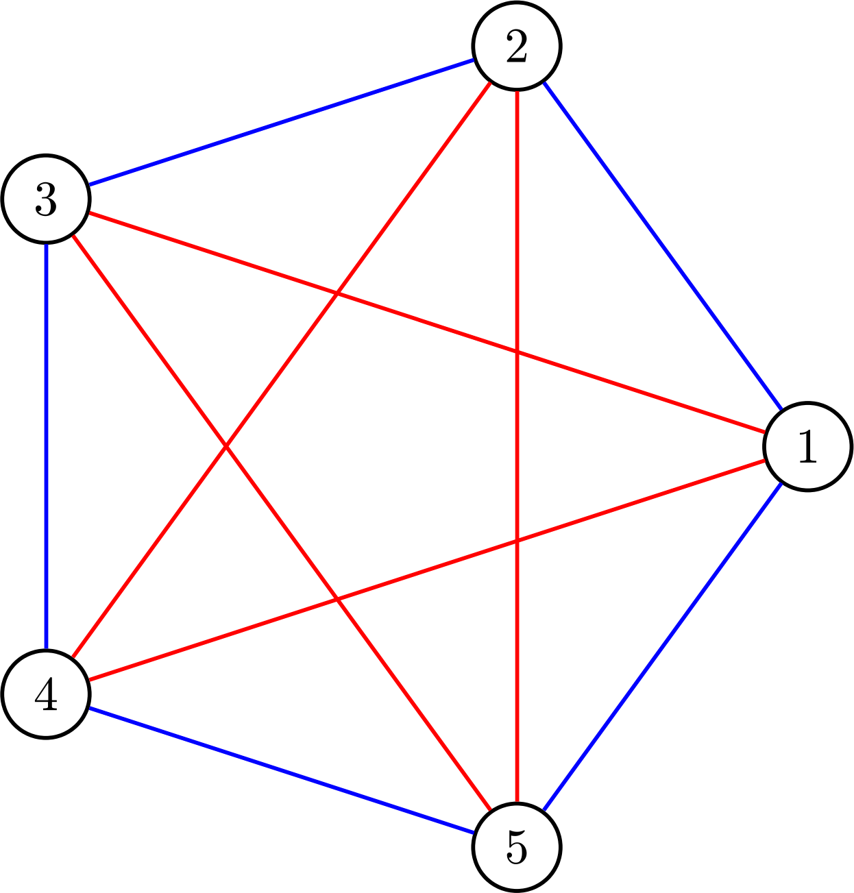
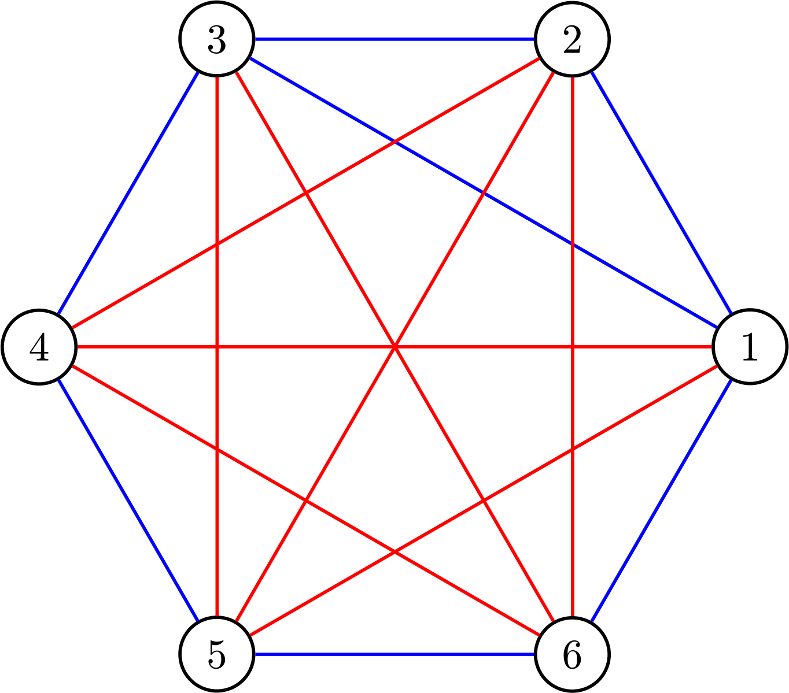
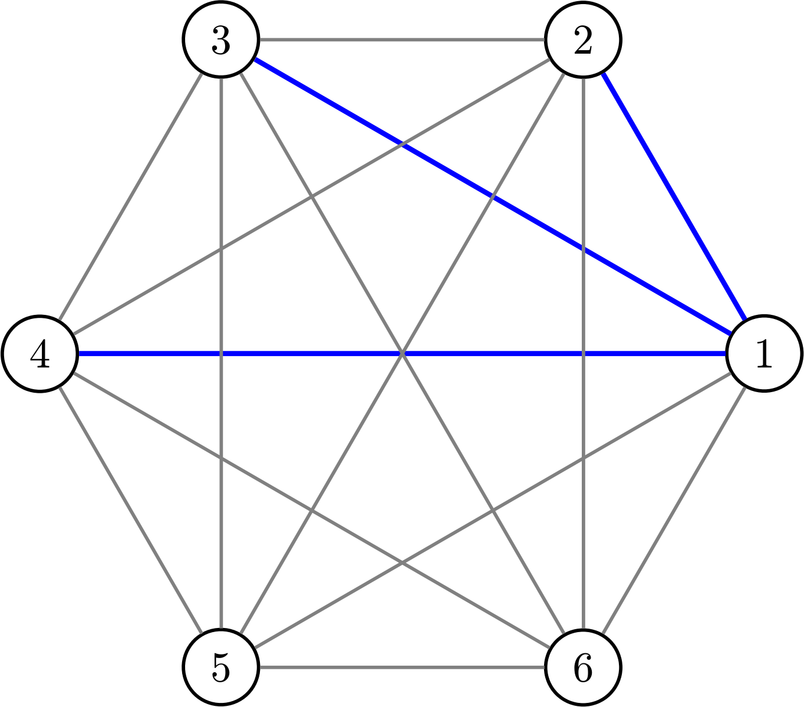
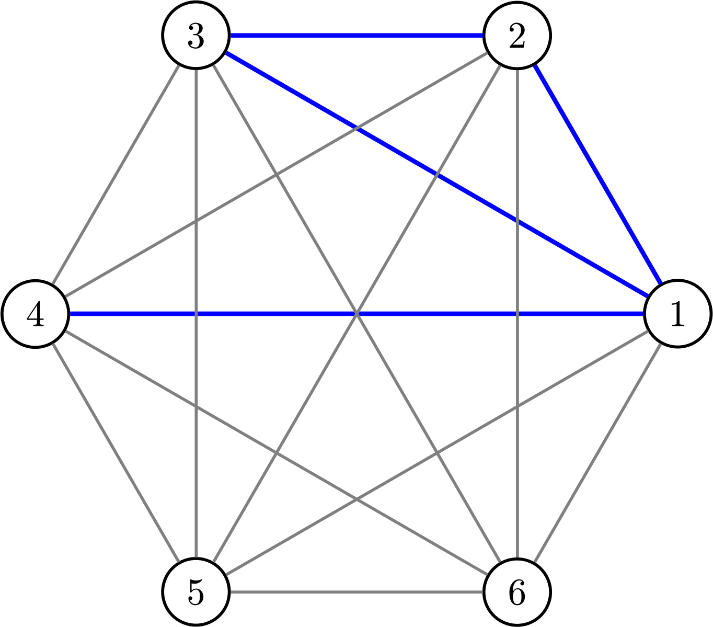
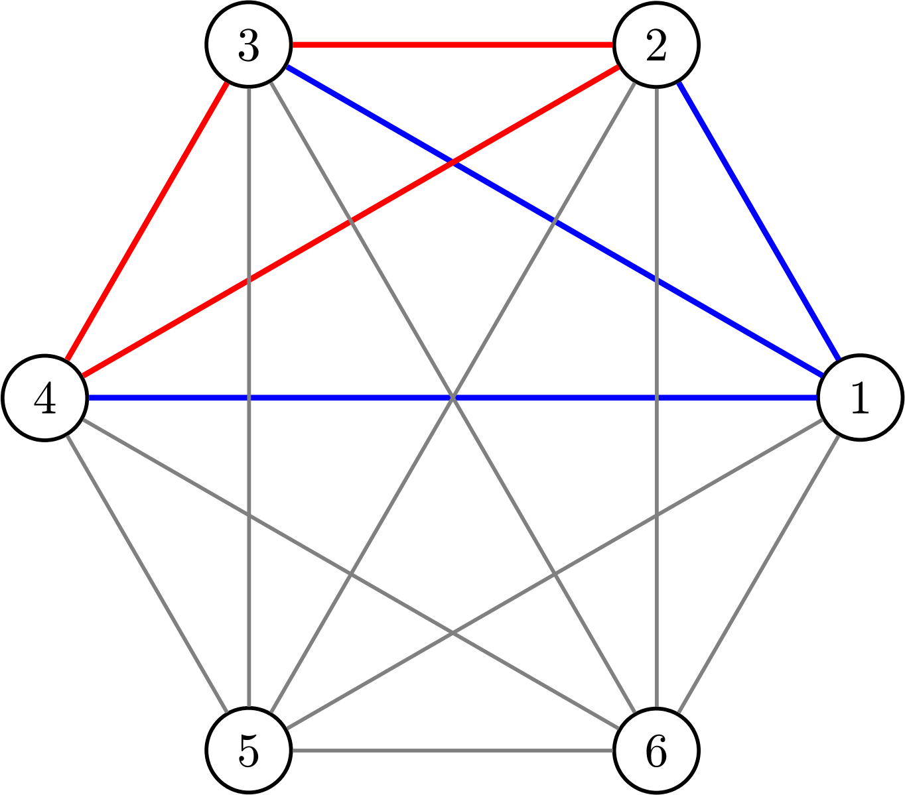
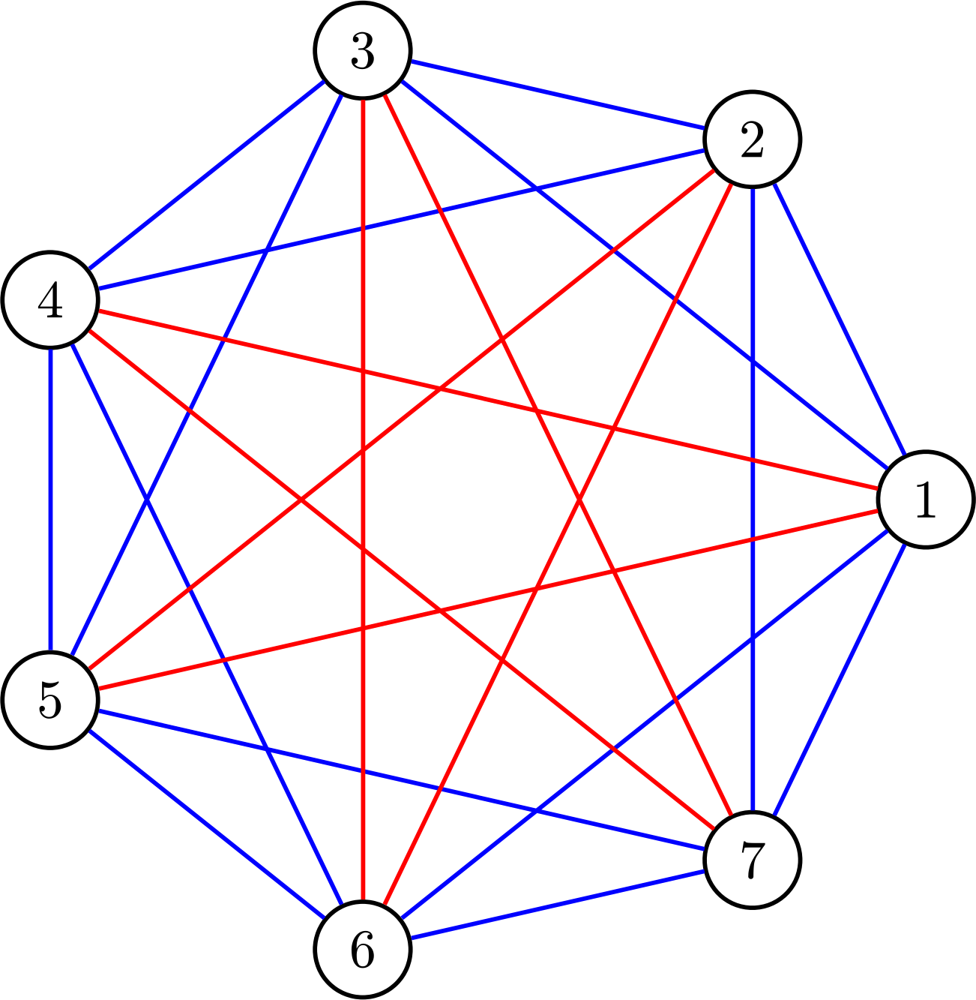

<!DOCTYPE html>
<html lang="en"><head><title>파티 플래너 문제</title><meta charset="utf-8"/><meta name="naver-site-verification" content="5e159a7268919737a48b96b31da3abdead65347b"/><meta name="google-site-verification" content="RjR4E2c1MRLgp0_TjyEVtmP48GjyYdHevuyk_1GIY2s"/><meta name="google-site-verification" content="OQW_nPCMFrMw6QhYg31bSQMGHHoLoM_lsB4IkFZ8O3M"/><link rel="preconnect" href="https://cdnjs.cloudflare.com" crossorigin="anonymous"/><meta name="viewport" content="width=device-width, initial-scale=1.0"/><meta name="og:site_name" content="Ray"/><meta property="og:title" content="파티 플래너 문제"/><meta property="og:type" content="website"/><meta name="twitter:card" content="summary_large_image"/><meta name="twitter:title" content="파티 플래너 문제"/><meta name="twitter:description" content="여러분은 파티를 준비하고 있고, 초대할 손님 명단을 작성 중입니다. 파티가 즐겁게 진행되려면 몇 명을 초대해야 할까요? 여기서 핵심은 초대된 사람들 사이의 관계입니다. 모든 손님이 서로 잘 아는 사이라면 이야깃거리가 금방 고갈될 수 있습니다."/><meta property="og:description" content="여러분은 파티를 준비하고 있고, 초대할 손님 명단을 작성 중입니다. 파티가 즐겁게 진행되려면 몇 명을 초대해야 할까요? 여기서 핵심은 초대된 사람들 사이의 관계입니다. 모든 손님이 서로 잘 아는 사이라면 이야깃거리가 금방 고갈될 수 있습니다."/><meta property="og:image:alt" content="여러분은 파티를 준비하고 있고, 초대할 손님 명단을 작성 중입니다. 파티가 즐겁게 진행되려면 몇 명을 초대해야 할까요? 여기서 핵심은 초대된 사람들 사이의 관계입니다. 모든 손님이 서로 잘 아는 사이라면 이야깃거리가 금방 고갈될 수 있습니다."/><meta property="og:image" content="https://raymath.pages.dev/static/og-image.png"/><meta property="og:image:url" content="https://raymath.pages.dev/static/og-image.png"/><meta name="twitter:image" content="https://raymath.pages.dev/static/og-image.png"/><meta property="og:image:type" content="image/.png"/><meta property="twitter:domain" content="raymath.pages.dev"/><meta property="og:url" content="https://raymath.pages.dev/Ray-math/Script/파티-플래너-문제"/><meta property="twitter:url" content="https://raymath.pages.dev/Ray-math/Script/파티-플래너-문제"/><link rel="icon" href="../../static/icon.png"/><meta name="description" content="여러분은 파티를 준비하고 있고, 초대할 손님 명단을 작성 중입니다. 파티가 즐겁게 진행되려면 몇 명을 초대해야 할까요? 여기서 핵심은 초대된 사람들 사이의 관계입니다. 모든 손님이 서로 잘 아는 사이라면 이야깃거리가 금방 고갈될 수 있습니다."/><meta name="generator" content="Quartz"/><link href="../../index.css" rel="stylesheet" type="text/css" spa-preserve/><style>.expand-button {
  position: absolute;
  display: flex;
  float: right;
  padding: 0.4rem;
  margin: 0.3rem;
  right: 0;
  color: var(--gray);
  border-color: var(--dark);
  background-color: var(--light);
  border: 1px solid;
  border-radius: 5px;
  opacity: 0;
  transition: 0.2s;
}
.expand-button > svg {
  fill: var(--light);
  filter: contrast(0.3);
}
.expand-button:hover {
  cursor: pointer;
  border-color: var(--secondary);
}
.expand-button:focus {
  outline: 0;
}

pre:hover > .expand-button {
  opacity: 1;
  transition: 0.2s;
}

#mermaid-container {
  position: fixed;
  contain: layout;
  z-index: 999;
  left: 0;
  top: 0;
  width: 100vw;
  height: 100vh;
  overflow: hidden;
  display: none;
  backdrop-filter: blur(4px);
  background: rgba(0, 0, 0, 0.5);
}
#mermaid-container.active {
  display: inline-block;
}
#mermaid-container > #mermaid-space {
  border: 1px solid var(--lightgray);
  background-color: var(--light);
  border-radius: 5px;
  position: fixed;
  top: 50%;
  left: 50%;
  transform: translate(-50%, -50%);
  height: 80vh;
  width: 80vw;
  overflow: hidden;
}
#mermaid-container > #mermaid-space > .mermaid-content {
  padding: 2rem;
  position: relative;
  transform-origin: 0 0;
  transition: transform 0.1s ease;
  overflow: visible;
  min-height: 200px;
  min-width: 200px;
}
#mermaid-container > #mermaid-space > .mermaid-content pre {
  margin: 0;
  border: none;
}
#mermaid-container > #mermaid-space > .mermaid-content svg {
  max-width: none;
  height: auto;
}
#mermaid-container > #mermaid-space > .mermaid-controls {
  position: absolute;
  bottom: 20px;
  right: 20px;
  display: flex;
  gap: 8px;
  padding: 8px;
  background: var(--light);
  border: 1px solid var(--lightgray);
  border-radius: 6px;
  box-shadow: 0 2px 4px rgba(0, 0, 0, 0.1);
  z-index: 2;
}
#mermaid-container > #mermaid-space > .mermaid-controls .mermaid-control-button {
  display: flex;
  align-items: center;
  justify-content: center;
  width: 32px;
  height: 32px;
  padding: 0;
  border: 1px solid var(--lightgray);
  background: var(--light);
  color: var(--dark);
  border-radius: 4px;
  cursor: pointer;
  font-size: 16px;
  font-family: var(--bodyFont);
  transition: all 0.2s ease;
}
#mermaid-container > #mermaid-space > .mermaid-controls .mermaid-control-button:hover {
  background: var(--lightgray);
}
#mermaid-container > #mermaid-space > .mermaid-controls .mermaid-control-button:active {
  transform: translateY(1px);
}
#mermaid-container > #mermaid-space > .mermaid-controls .mermaid-control-button:nth-child(2) {
  width: auto;
  padding: 0 12px;
  font-size: 14px;
}
/*# sourceMappingURL= */</style><link href="https://cdn.jsdelivr.net/npm/katex@0.16.11/dist/katex.min.css" rel="stylesheet" type="text/css" spa-preserve/><script src="../../prescript.js" type="application/javascript" spa-preserve></script><script type="application/javascript" spa-preserve>const fetchData = fetch("../../static/contentIndex.json").then(data => data.json())</script><link rel="alternate" type="application/rss+xml" title="RSS Feed" href="https://raymath.pages.dev/index.xml"/></head><body data-slug="Ray-math/Script/파티-플래너-문제"><div id="quartz-root" class="page"><div id="quartz-body"><div class="left sidebar"><h2 class="page-title"><a href="../..">Ray</a></h2><div class="search"><button class="search-button"><p>Search</p><svg role="img" xmlns="http://www.w3.org/2000/svg" viewBox="0 0 19.9 19.7"><title>Search</title><g class="search-path" fill="none"><path stroke-linecap="square" d="M18.5 18.3l-5.4-5.4"></path><circle cx="8" cy="8" r="7"></circle></g></svg></button><div class="search-container"><div class="search-space"><input autocomplete="off" class="search-bar" name="search" type="text" aria-label="Search for something" placeholder="Search for something"/><div class="search-layout" data-preview="true"></div></div></div></div><button class="darkmode"><svg xmlns="http://www.w3.org/2000/svg" xmlns:xlink="http://www.w3.org/1999/xlink" version="1.1" class="dayIcon" x="0px" y="0px" viewBox="0 0 35 35" style="enable-background:new 0 0 35 35" xml:space="preserve" aria-label="Dark mode"><title>Dark mode</title><path d="M6,17.5C6,16.672,5.328,16,4.5,16h-3C0.672,16,0,16.672,0,17.5    S0.672,19,1.5,19h3C5.328,19,6,18.328,6,17.5z M7.5,26c-0.414,0-0.789,0.168-1.061,0.439l-2,2C4.168,28.711,4,29.086,4,29.5    C4,30.328,4.671,31,5.5,31c0.414,0,0.789-0.168,1.06-0.44l2-2C8.832,28.289,9,27.914,9,27.5C9,26.672,8.329,26,7.5,26z M17.5,6    C18.329,6,19,5.328,19,4.5v-3C19,0.672,18.329,0,17.5,0S16,0.672,16,1.5v3C16,5.328,16.671,6,17.5,6z M27.5,9    c0.414,0,0.789-0.168,1.06-0.439l2-2C30.832,6.289,31,5.914,31,5.5C31,4.672,30.329,4,29.5,4c-0.414,0-0.789,0.168-1.061,0.44    l-2,2C26.168,6.711,26,7.086,26,7.5C26,8.328,26.671,9,27.5,9z M6.439,8.561C6.711,8.832,7.086,9,7.5,9C8.328,9,9,8.328,9,7.5    c0-0.414-0.168-0.789-0.439-1.061l-2-2C6.289,4.168,5.914,4,5.5,4C4.672,4,4,4.672,4,5.5c0,0.414,0.168,0.789,0.439,1.06    L6.439,8.561z M33.5,16h-3c-0.828,0-1.5,0.672-1.5,1.5s0.672,1.5,1.5,1.5h3c0.828,0,1.5-0.672,1.5-1.5S34.328,16,33.5,16z     M28.561,26.439C28.289,26.168,27.914,26,27.5,26c-0.828,0-1.5,0.672-1.5,1.5c0,0.414,0.168,0.789,0.439,1.06l2,2    C28.711,30.832,29.086,31,29.5,31c0.828,0,1.5-0.672,1.5-1.5c0-0.414-0.168-0.789-0.439-1.061L28.561,26.439z M17.5,29    c-0.829,0-1.5,0.672-1.5,1.5v3c0,0.828,0.671,1.5,1.5,1.5s1.5-0.672,1.5-1.5v-3C19,29.672,18.329,29,17.5,29z M17.5,7    C11.71,7,7,11.71,7,17.5S11.71,28,17.5,28S28,23.29,28,17.5S23.29,7,17.5,7z M17.5,25c-4.136,0-7.5-3.364-7.5-7.5    c0-4.136,3.364-7.5,7.5-7.5c4.136,0,7.5,3.364,7.5,7.5C25,21.636,21.636,25,17.5,25z"></path></svg><svg xmlns="http://www.w3.org/2000/svg" xmlns:xlink="http://www.w3.org/1999/xlink" version="1.1" class="nightIcon" x="0px" y="0px" viewBox="0 0 100 100" style="enable-background:new 0 0 100 100" xml:space="preserve" aria-label="Light mode"><title>Light mode</title><path d="M96.76,66.458c-0.853-0.852-2.15-1.064-3.23-0.534c-6.063,2.991-12.858,4.571-19.655,4.571  C62.022,70.495,50.88,65.88,42.5,57.5C29.043,44.043,25.658,23.536,34.076,6.47c0.532-1.08,0.318-2.379-0.534-3.23  c-0.851-0.852-2.15-1.064-3.23-0.534c-4.918,2.427-9.375,5.619-13.246,9.491c-9.447,9.447-14.65,22.008-14.65,35.369  c0,13.36,5.203,25.921,14.65,35.368s22.008,14.65,35.368,14.65c13.361,0,25.921-5.203,35.369-14.65  c3.872-3.871,7.064-8.328,9.491-13.246C97.826,68.608,97.611,67.309,96.76,66.458z"></path></svg></button><div class="explorer" data-behavior="link" data-collapsed="collapsed" data-savestate="true" data-data-fns="{&quot;order&quot;:[&quot;filter&quot;,&quot;map&quot;,&quot;sort&quot;],&quot;sortFn&quot;:&quot;(a,b)=>!a.isFolder&amp;&amp;!b.isFolder||a.isFolder&amp;&amp;b.isFolder?a.displayName.localeCompare(b.displayName,void 0,{numeric:!0,sensitivity:\&quot;base\&quot;}):!a.isFolder&amp;&amp;b.isFolder?1:-1&quot;,&quot;filterFn&quot;:&quot;node=>node.slugSegment!==\&quot;tags\&quot;&quot;,&quot;mapFn&quot;:&quot;node=>node&quot;}"><button type="button" class="explorer-toggle mobile-explorer hide-until-loaded" data-mobile="true" aria-controls="explorer-content" aria-label="explorer-content" aria-expanded="false"><svg xmlns="http://www.w3.org/2000/svg" width="24" height="24" viewBox="0 0 24 24" stroke-width="2" stroke-linecap="round" stroke-linejoin="round" class="lucide-menu"><line x1="4" x2="20" y1="12" y2="12"></line><line x1="4" x2="20" y1="6" y2="6"></line><line x1="4" x2="20" y1="18" y2="18"></line></svg></button><button type="button" class="title-button explorer-toggle desktop-explorer" data-mobile="false" aria-controls="explorer-content" aria-label="explorer-content" aria-expanded="true"><h2>Explorer</h2><svg xmlns="http://www.w3.org/2000/svg" width="14" height="14" viewBox="5 8 14 8" fill="none" stroke="currentColor" stroke-width="2" stroke-linecap="round" stroke-linejoin="round" class="fold"><polyline points="6 9 12 15 18 9"></polyline></svg></button><div class="explorer-content" aria-expanded="false"><ul class="explorer-ul overflow" id="list-0"><li class="overflow-end"></li></ul></div><template id="template-file"><li><a href="#"></a></li></template><template id="template-folder"><li><div class="folder-container"><svg xmlns="http://www.w3.org/2000/svg" width="12" height="12" viewBox="5 8 14 8" fill="none" stroke="currentColor" stroke-width="2" stroke-linecap="round" stroke-linejoin="round" class="folder-icon"><polyline points="6 9 12 15 18 9"></polyline></svg><div><button class="folder-button"><span class="folder-title"></span></button></div></div><div class="folder-outer"><ul class="content"></ul></div></li></template></div></div><div class="center"><div class="page-header"><div class="popover-hint"><nav class="breadcrumb-container" aria-label="breadcrumbs"><div class="breadcrumb-element"><a href="../../">Home</a><p> ❯ </p></div><div class="breadcrumb-element"><a href="../../Ray-math/">Ray math</a><p> ❯ </p></div><div class="breadcrumb-element"><a href="../../Ray-math/Script/">Script</a><p> ❯ </p></div><div class="breadcrumb-element"><a href>파티 플래너 문제</a></div></nav><h1 class="article-title">파티 플래너 문제</h1><p show-comma="true" class="content-meta"><time datetime="2024-09-22T15:00:00.000Z">Sep 23, 2024</time><span>25 min read</span></p></div></div><article class="popover-hint"><p>여러분은 파티를 준비하고 있고, 초대할 손님 명단을 작성 중입니다. 파티가 즐겁게 진행되려면 몇 명을 초대해야 할까요? 여기서 핵심은 초대된 사람들 사이의 관계입니다. 모든 손님이 서로 잘 아는 사이라면 이야깃거리가 금방 고갈될 수 있습니다. 반대로, 모든 손님이 서로 모르는 사이라면 어색한 분위기가 형성될 수도 있죠. 따라서, 손님들 사이의 관계가 적당히 섞여 있는 것이 중요합니다. 그렇다면, 이 균형을 유지하면서도 파티가 흥미롭게 진행되려면 어떻게 해야할까요?</p>
<p>이런 질문을 던져봅시다. 적어도 3명이 서로 알거나, 3명이 서로 모르는 그룹이 생기도록 하려면 최소 몇 명의 손님을 초대해야 할까요?</p>
<h2 id="파티-플래너-문제와-그래프">파티 플래너 문제와 그래프<a role="anchor" aria-hidden="true" tabindex="-1" data-no-popover="true" href="#파티-플래너-문제와-그래프" class="internal"><svg width="18" height="18" viewBox="0 0 24 24" fill="none" stroke="currentColor" stroke-width="2" stroke-linecap="round" stroke-linejoin="round"><path d="M10 13a5 5 0 0 0 7.54.54l3-3a5 5 0 0 0-7.07-7.07l-1.72 1.71"></path><path d="M14 11a5 5 0 0 0-7.54-.54l-3 3a5 5 0 0 0 7.07 7.07l1.71-1.71"></path></svg></a></h2>
<p>앞서 본 문제를 파티 플래너 문제라고 부릅니다. 이 문제를 이해하기 위해서는 <strong>그래프 이론</strong>을 사용해야 합니다. 그래프 이론은 복잡한 관계를 시각적으로 나타내고 분석할 수 있는 강력한 도구입니다.</p>
<p>예를 들어, 손님을 점(node)으로, 두 손님의 관계를 선(edge)으로 표현하면, 문제를 시각적으로 간단하게 표현할 수 있습니다. 그리고 이러한 그래프 모델은 다양한 크기의 문제로 확장 가능합니다.</p>
<p>먼저 5명의 손님을 원형으로 배치하고, 각 손님들 사이의 관계를 표시해보겠습니다. 아는 사람들 사이의 관계는 파란색 선으로, 모르는 사람들 사이의 관계는 빨간색 선으로 나타냅니다.<sup><a href="#user-content-fn-1" id="user-content-fnref-1" data-footnote-ref aria-describedby="footnote-label" class="internal alias">1</a></sup></p>
<p></p>
<p>이 그래프에서 각 손님은 서로 아는 관계(파란색 선)와 모르는 관계(빨간색 선)로 연결되어 있습니다. 예를 들어, 1번 손님과 2번, 5번 손님은 서로 아는 사이입니다(파란색 선). 반면, 1번 손님과 3번, 4번 손님은 서로 모르는 사이입니다(빨간색 선).</p>
<p>파란색 선으로 연결된 사람들은 서로 알고 있지만, 같은 색 선으로 둘러싸인 삼각형이 없습니다. 예를 들어, 1번, 2번, 3번 손님은 1번과 2번, 2번과 3번이 서로 아는 사이지만, 1번과 3번은 서로 모르는 사이입니다(빨간색 선). 따라서 파란색 선으로만 이루어진 삼각형이 없습니다.</p>
<p>반대로, 1번, 3번, 4번 손님은 1번과 3번, 1번과 4번이 서로 모르는 사이지만, 3번과 4번은 서로 아는 사이입니다(파란색 선). 따라서 빨간색 선으로만 이루어진 삼각형도 없습니다.</p>
<p>따라서, 5명의 손님을 초대했을 때는 어떤 3명이 서로 모두 아는 친구이거나, 3명이 서로 모르는 낯선 사람인 상황이 그림과 같이 발생할 수 없을 수도 있습니다.</p>
<p>그러나 6명일 때는 다릅니다. 정말 신기하게도, 6명을 초대하면 손님들 사이의 관계를 어떻게 설정하더라도, 서로 아는 3명의 그룹 또는 서로 모르는 3명의 그룹 중 하나가 반드시 발생하게 됩니다. 지금부터 그 이유를 설명해드리겠습니다.</p>
<p></p>
<h2 id="램지-수-rst">램지 수 <span class="katex"><span class="katex-html" aria-hidden="true"><span class="base"><span class="strut" style="height:1em;vertical-align:-0.25em;"></span><span class="mord mathnormal" style="margin-right:0.00773em;">R</span><span class="mopen">(</span><span class="mord mathnormal">s</span><span class="mpunct">,</span><span class="mspace nobreak"> </span><span class="mspace" style="margin-right:0.1667em;"></span><span class="mord mathnormal">t</span><span class="mclose">)</span></span></span></span><a role="anchor" aria-hidden="true" tabindex="-1" data-no-popover="true" href="#램지-수-rst" class="internal"><svg width="18" height="18" viewBox="0 0 24 24" fill="none" stroke="currentColor" stroke-width="2" stroke-linecap="round" stroke-linejoin="round"><path d="M10 13a5 5 0 0 0 7.54.54l3-3a5 5 0 0 0-7.07-7.07l-1.72 1.71"></path><path d="M14 11a5 5 0 0 0-7.54-.54l-3 3a5 5 0 0 0 7.07 7.07l1.71-1.71"></path></svg></a></h2>
<p>증명에 앞서, 파티 플래너 문제를 수학적으로 재해석해 보겠습니다. 앞선 질문은 질문은 램지 수 <span class="katex"><span class="katex-html" aria-hidden="true"><span class="base"><span class="strut" style="height:1em;vertical-align:-0.25em;"></span><span class="mord mathnormal" style="margin-right:0.00773em;">R</span><span class="mopen">(</span><span class="mord mathnormal">s</span><span class="mpunct">,</span><span class="mspace nobreak"> </span><span class="mspace" style="margin-right:0.1667em;"></span><span class="mord mathnormal">t</span><span class="mclose">)</span></span></span></span>라는 개념으로 설명할 수 있습니다. 여기서 <span class="katex"><span class="katex-html" aria-hidden="true"><span class="base"><span class="strut" style="height:1em;vertical-align:-0.25em;"></span><span class="mord mathnormal" style="margin-right:0.00773em;">R</span><span class="mopen">(</span><span class="mord mathnormal">s</span><span class="mpunct">,</span><span class="mspace nobreak"> </span><span class="mspace" style="margin-right:0.1667em;"></span><span class="mord mathnormal">t</span><span class="mclose">)</span></span></span></span>란, 임의의 완전 그래프에서  <span class="katex"><span class="katex-html" aria-hidden="true"><span class="base"><span class="strut" style="height:0.4306em;"></span><span class="mord mathnormal">s</span></span></span></span>개의 정점이 모두 연결된 클리크 또는  <span class="katex"><span class="katex-html" aria-hidden="true"><span class="base"><span class="strut" style="height:0.6151em;"></span><span class="mord mathnormal">t</span></span></span></span>개의 정점이 모두 연결되지 않은 독립 그래프를 반드시 포함하도록 하는 최소한의 정점 수 <span class="katex"><span class="katex-html" aria-hidden="true"><span class="base"><span class="strut" style="height:0.6833em;"></span><span class="mord mathnormal" style="margin-right:0.10903em;">N</span></span></span></span>입니다.<sup><a href="#user-content-fn-2" id="user-content-fnref-2" data-footnote-ref aria-describedby="footnote-label" class="internal alias">2</a></sup> 여기서 완전 그래프 <span class="katex"><span class="katex-html" aria-hidden="true"><span class="base"><span class="strut" style="height:0.8333em;vertical-align:-0.15em;"></span><span class="mord"><span class="mord mathnormal" style="margin-right:0.07153em;">K</span><span class="msupsub"><span class="vlist-t vlist-t2"><span class="vlist-r"><span class="vlist" style="height:0.1514em;"><span style="top:-2.55em;margin-left:-0.0715em;margin-right:0.05em;"><span class="pstrut" style="height:2.7em;"></span><span class="sizing reset-size6 size3 mtight"><span class="mord mathnormal mtight">n</span></span></span></span><span class="vlist-s">​</span></span><span class="vlist-r"><span class="vlist" style="height:0.15em;"><span></span></span></span></span></span></span></span></span></span>이란모든 정점이 연결된 그래프를 의미합니다. <span class="katex"><span class="katex-html" aria-hidden="true"><span class="base"><span class="strut" style="height:0.8333em;vertical-align:-0.15em;"></span><span class="mord"><span class="mord mathnormal" style="margin-right:0.07153em;">K</span><span class="msupsub"><span class="vlist-t vlist-t2"><span class="vlist-r"><span class="vlist" style="height:0.3011em;"><span style="top:-2.55em;margin-left:-0.0715em;margin-right:0.05em;"><span class="pstrut" style="height:2.7em;"></span><span class="sizing reset-size6 size3 mtight"><span class="mord mtight">3</span></span></span></span><span class="vlist-s">​</span></span><span class="vlist-r"><span class="vlist" style="height:0.15em;"><span></span></span></span></span></span></span></span></span></span>는 <span class="katex"><span class="katex-html" aria-hidden="true"><span class="base"><span class="strut" style="height:0.6444em;"></span><span class="mord">3</span></span></span></span>개의 정점이 모두 서로 연결된 삼각형 모양의 그래프이고, <span class="katex"><span class="katex-html" aria-hidden="true"><span class="base"><span class="strut" style="height:0.8333em;vertical-align:-0.15em;"></span><span class="mord"><span class="mord mathnormal" style="margin-right:0.07153em;">K</span><span class="msupsub"><span class="vlist-t vlist-t2"><span class="vlist-r"><span class="vlist" style="height:0.3011em;"><span style="top:-2.55em;margin-left:-0.0715em;margin-right:0.05em;"><span class="pstrut" style="height:2.7em;"></span><span class="sizing reset-size6 size3 mtight"><span class="mord mtight">4</span></span></span></span><span class="vlist-s">​</span></span><span class="vlist-r"><span class="vlist" style="height:0.15em;"><span></span></span></span></span></span></span></span></span></span>는 <span class="katex"><span class="katex-html" aria-hidden="true"><span class="base"><span class="strut" style="height:0.6444em;"></span><span class="mord">4</span></span></span></span>개의 정점이 모두 서로 연결된 그래프입니다.</p>
<p></p>
<p>반대로, 그래프 내의 모든 정점이 서로 연결되지 않은 그래프를 독립 그래프라고 합니다. 독립 그래프에서는 어떤 두 정점 사이에도 간선이 존재하지 않습니다.</p>
<p></p>
<p>이해하기 쉽게 연결된 선은 파란색으로, 연결되지 않은 선은 빨간색 선으로 나타내 보겠습니다.</p>
<p>그렇다면, <span class="katex"><span class="katex-html" aria-hidden="true"><span class="base"><span class="strut" style="height:1em;vertical-align:-0.25em;"></span><span class="mord mathnormal" style="margin-right:0.00773em;">R</span><span class="mopen">(</span><span class="mord mathnormal">s</span><span class="mpunct">,</span><span class="mspace nobreak"> </span><span class="mspace" style="margin-right:0.1667em;"></span><span class="mord mathnormal">t</span><span class="mclose">)</span></span></span></span>는 그래프의 모든 변을 두 가지 색으로 색칠했을 때, <span class="katex"><span class="katex-html" aria-hidden="true"><span class="base"><span class="strut" style="height:0.4306em;"></span><span class="mord mathnormal">s</span></span></span></span>개의 꼭짓점이 파란색으로 완전 연결되거나, <span class="katex"><span class="katex-html" aria-hidden="true"><span class="base"><span class="strut" style="height:0.6151em;"></span><span class="mord mathnormal">t</span></span></span></span>개의 꼭짓점이 빨간색으로 완전 연결되도록 하는 최소한의 정점 수입니다. 따라서 앞서 보았던 문제 상황은 ‘<span class="katex"><span class="katex-html" aria-hidden="true"><span class="base"><span class="strut" style="height:1em;vertical-align:-0.25em;"></span><span class="mord mathnormal" style="margin-right:0.00773em;">R</span><span class="mopen">(</span><span class="mord">3</span><span class="mpunct">,</span><span class="mspace nobreak"> </span><span class="mspace" style="margin-right:0.1667em;"></span><span class="mord">3</span><span class="mclose">)</span></span></span></span>이 몇 인가?‘하는 문제로 바뀌게 되죠.</p>
<p>다시 말해, 모든 변의 색이 같은 삼각형이 존재하는 모든 정점들이 서로 연결된 최소의 정점 그래프를 찾으면 됩니다. 앞서 <span class="katex"><span class="katex-html" aria-hidden="true"><span class="base"><span class="strut" style="height:0.4306em;"></span><span class="mord mathnormal">n</span><span class="mspace" style="margin-right:0.2778em;"></span><span class="mrel">=</span><span class="mspace" style="margin-right:0.2778em;"></span></span><span class="base"><span class="strut" style="height:0.6444em;"></span><span class="mord">5</span></span></span></span>일 때, 이러한 성질을 만족하지 않는 예시를 찾았으므로, <span class="katex"><span class="katex-html" aria-hidden="true"><span class="base"><span class="strut" style="height:0.4306em;"></span><span class="mord mathnormal">n</span><span class="mspace" style="margin-right:0.2778em;"></span><span class="mrel">=</span><span class="mspace" style="margin-right:0.2778em;"></span></span><span class="base"><span class="strut" style="height:0.6444em;"></span><span class="mord">6</span></span></span></span>일 때는 이러한 성질을 반드시 만족하는지, 찾아보도록 하겠습니다.
</p>
<p>먼저 <span class="katex"><span class="katex-html" aria-hidden="true"><span class="base"><span class="strut" style="height:0.6444em;"></span><span class="mord">6</span></span></span></span>개의 정점을 가지는 완전 그래프 <span class="katex"><span class="katex-html" aria-hidden="true"><span class="base"><span class="strut" style="height:0.8333em;vertical-align:-0.15em;"></span><span class="mord"><span class="mord mathnormal" style="margin-right:0.07153em;">K</span><span class="msupsub"><span class="vlist-t vlist-t2"><span class="vlist-r"><span class="vlist" style="height:0.3011em;"><span style="top:-2.55em;margin-left:-0.0715em;margin-right:0.05em;"><span class="pstrut" style="height:2.7em;"></span><span class="sizing reset-size6 size3 mtight"><span class="mord mtight">6</span></span></span></span><span class="vlist-s">​</span></span><span class="vlist-r"><span class="vlist" style="height:0.15em;"><span></span></span></span></span></span></span></span></span></span>을 상상해보겠습니다.</p>
<h4 id="비둘기집-원리">비둘기집 원리<a role="anchor" aria-hidden="true" tabindex="-1" data-no-popover="true" href="#비둘기집-원리" class="internal"><svg width="18" height="18" viewBox="0 0 24 24" fill="none" stroke="currentColor" stroke-width="2" stroke-linecap="round" stroke-linejoin="round"><path d="M10 13a5 5 0 0 0 7.54.54l3-3a5 5 0 0 0-7.07-7.07l-1.72 1.71"></path><path d="M14 11a5 5 0 0 0-7.54-.54l-3 3a5 5 0 0 0 7.07 7.07l1.71-1.71"></path></svg></a></h4>
<p>완전 그래프 <span class="katex"><span class="katex-html" aria-hidden="true"><span class="base"><span class="strut" style="height:0.8333em;vertical-align:-0.15em;"></span><span class="mord"><span class="mord mathnormal" style="margin-right:0.07153em;">K</span><span class="msupsub"><span class="vlist-t vlist-t2"><span class="vlist-r"><span class="vlist" style="height:0.3011em;"><span style="top:-2.55em;margin-left:-0.0715em;margin-right:0.05em;"><span class="pstrut" style="height:2.7em;"></span><span class="sizing reset-size6 size3 mtight"><span class="mord mtight">6</span></span></span></span><span class="vlist-s">​</span></span><span class="vlist-r"><span class="vlist" style="height:0.15em;"><span></span></span></span></span></span></span></span></span></span>의 특정 꼭짓점에서 나가는 <span class="katex"><span class="katex-html" aria-hidden="true"><span class="base"><span class="strut" style="height:0.6444em;"></span><span class="mord">5</span></span></span></span>개의 선 중 적어도 <span class="katex"><span class="katex-html" aria-hidden="true"><span class="base"><span class="strut" style="height:0.6444em;"></span><span class="mord">3</span></span></span></span>개의 선은 비둘기 집 원리에 의해 반드시 같은 색으로 칠해져야 합니다. 왜냐하면 빨강과 파랑 두개의 색에 <span class="katex"><span class="katex-html" aria-hidden="true"><span class="base"><span class="strut" style="height:0.6444em;"></span><span class="mord">5</span></span></span></span>개의 선을 골고루 배정한다면, 아무리 골고루 배정 해도 하나가 남고, 그 하나는 반드시 두 색 중 하나의 색을 골라야하기 때문이죠. 저는 이 선이 파란색으로 같다고 하고, <span class="katex"><span class="katex-html" aria-hidden="true"><span class="base"><span class="strut" style="height:0.8389em;vertical-align:-0.1944em;"></span><span class="mord">2</span><span class="mpunct">,</span><span class="mspace nobreak"> </span><span class="mspace" style="margin-right:0.1667em;"></span><span class="mord">3</span><span class="mpunct">,</span><span class="mspace nobreak"> </span><span class="mspace" style="margin-right:0.1667em;"></span><span class="mord">4</span></span></span></span>로 그어보겠습니다.
</p>
<h4 id="단색-삼각형의-존재">단색 삼각형의 존재<a role="anchor" aria-hidden="true" tabindex="-1" data-no-popover="true" href="#단색-삼각형의-존재" class="internal"><svg width="18" height="18" viewBox="0 0 24 24" fill="none" stroke="currentColor" stroke-width="2" stroke-linecap="round" stroke-linejoin="round"><path d="M10 13a5 5 0 0 0 7.54.54l3-3a5 5 0 0 0-7.07-7.07l-1.72 1.71"></path><path d="M14 11a5 5 0 0 0-7.54-.54l-3 3a5 5 0 0 0 7.07 7.07l1.71-1.71"></path></svg></a></h4>
<p>이제 선택 받은 <span class="katex"><span class="katex-html" aria-hidden="true"><span class="base"><span class="strut" style="height:0.6444em;"></span><span class="mord">3</span></span></span></span>개의 꼭짓점 <span class="katex"><span class="katex-html" aria-hidden="true"><span class="base"><span class="strut" style="height:0.8389em;vertical-align:-0.1944em;"></span><span class="mord">2</span><span class="mpunct">,</span><span class="mspace nobreak"> </span><span class="mspace" style="margin-right:0.1667em;"></span><span class="mord">3</span><span class="mpunct">,</span><span class="mspace nobreak"> </span><span class="mspace" style="margin-right:0.1667em;"></span><span class="mord">4</span></span></span></span>를 연결 하는 선 <span class="katex"><span class="katex-html" aria-hidden="true"><span class="base"><span class="strut" style="height:0.7278em;vertical-align:-0.0833em;"></span><span class="mord">2</span><span class="mspace" style="margin-right:0.2222em;"></span><span class="mbin">−</span><span class="mspace" style="margin-right:0.2222em;"></span></span><span class="base"><span class="strut" style="height:0.8389em;vertical-align:-0.1944em;"></span><span class="mord">3</span><span class="mpunct">,</span><span class="mspace nobreak"> </span><span class="mspace" style="margin-right:0.1667em;"></span><span class="mord">3</span><span class="mspace" style="margin-right:0.2222em;"></span><span class="mbin">−</span><span class="mspace" style="margin-right:0.2222em;"></span></span><span class="base"><span class="strut" style="height:0.8389em;vertical-align:-0.1944em;"></span><span class="mord">4</span><span class="mpunct">,</span><span class="mspace nobreak"> </span><span class="mspace" style="margin-right:0.1667em;"></span><span class="mord">2</span><span class="mspace" style="margin-right:0.2222em;"></span><span class="mbin">−</span><span class="mspace" style="margin-right:0.2222em;"></span></span><span class="base"><span class="strut" style="height:0.6444em;"></span><span class="mord">4</span></span></span></span> 중 적어도 하나의 선이 파란 색이라면 단색 삼각형이 완성됩니다.
</p>
<p>만약 세 선분이 모두 파란색이 아니라면, 반대로 모두 빨간색이어야 하는데, 그렇다면 <span class="katex"><span class="katex-html" aria-hidden="true"><span class="base"><span class="strut" style="height:0.8389em;vertical-align:-0.1944em;"></span><span class="mord">2</span><span class="mpunct">,</span><span class="mspace nobreak"> </span><span class="mspace" style="margin-right:0.1667em;"></span><span class="mord">3</span><span class="mpunct">,</span><span class="mspace nobreak"> </span><span class="mspace" style="margin-right:0.1667em;"></span><span class="mord">4</span></span></span></span> 세 개의 꼭짓점을 연결하는 모든 선은 빨간색으로 칠해져 다시 단색 삼각형이 만들어집니다.
</p>
<h4 id="색-교환-가능성">색 교환 가능성<a role="anchor" aria-hidden="true" tabindex="-1" data-no-popover="true" href="#색-교환-가능성" class="internal"><svg width="18" height="18" viewBox="0 0 24 24" fill="none" stroke="currentColor" stroke-width="2" stroke-linecap="round" stroke-linejoin="round"><path d="M10 13a5 5 0 0 0 7.54.54l3-3a5 5 0 0 0-7.07-7.07l-1.72 1.71"></path><path d="M14 11a5 5 0 0 0-7.54-.54l-3 3a5 5 0 0 0 7.07 7.07l1.71-1.71"></path></svg></a></h4>
<p>이 논리는 특정 색을 임의로 선택했기 때문에, 파란색과 빨간색의 역할을 교환해도 동일하게 적용됩니다. 따라서, 어떠한 경우에도 단색의 삼각형이 존재한다는 것을 보여줍니다. <span class="katex"><span class="katex-html" aria-hidden="true"><span class="base"><span class="strut" style="height:0.6444em;"></span><span class="mord">6</span></span></span></span>개의 정점을 가지는 그래프에서는 항상 단색 삼각형이 존재함을 증명했으므로, <span class="katex"><span class="katex-html" aria-hidden="true"><span class="base"><span class="strut" style="height:1em;vertical-align:-0.25em;"></span><span class="mord mathnormal" style="margin-right:0.00773em;">R</span><span class="mopen">(</span><span class="mord">3</span><span class="mpunct">,</span><span class="mspace" style="margin-right:0.1667em;"></span><span class="mord">3</span><span class="mclose">)</span><span class="mspace" style="margin-right:0.2778em;"></span><span class="mrel">≤</span><span class="mspace" style="margin-right:0.2778em;"></span></span><span class="base"><span class="strut" style="height:0.6444em;"></span><span class="mord">6</span></span></span></span>이고, 이전 그래프로 부터 <span class="katex"><span class="katex-html" aria-hidden="true"><span class="base"><span class="strut" style="height:1em;vertical-align:-0.25em;"></span><span class="mord mathnormal" style="margin-right:0.00773em;">R</span><span class="mopen">(</span><span class="mord">3</span><span class="mpunct">,</span><span class="mspace" style="margin-right:0.1667em;"></span><span class="mord">3</span><span class="mclose">)</span><span class="mspace" style="margin-right:0.2778em;"></span><span class="mrel">></span><span class="mspace" style="margin-right:0.2778em;"></span></span><span class="base"><span class="strut" style="height:0.6444em;"></span><span class="mord">5</span></span></span></span>임으로, <span class="katex"><span class="katex-html" aria-hidden="true"><span class="base"><span class="strut" style="height:1em;vertical-align:-0.25em;"></span><span class="mord mathnormal" style="margin-right:0.00773em;">R</span><span class="mopen">(</span><span class="mord">3</span><span class="mpunct">,</span><span class="mspace nobreak"> </span><span class="mspace" style="margin-right:0.1667em;"></span><span class="mord">3</span><span class="mclose">)</span><span class="mspace" style="margin-right:0.2778em;"></span><span class="mrel">=</span><span class="mspace" style="margin-right:0.2778em;"></span></span><span class="base"><span class="strut" style="height:0.6444em;"></span><span class="mord">6</span></span></span></span>입니다.</p>
<h2 id="램지-이론ramsey-theory">램지 이론(Ramsey Theory)<a role="anchor" aria-hidden="true" tabindex="-1" data-no-popover="true" href="#램지-이론ramsey-theory" class="internal"><svg width="18" height="18" viewBox="0 0 24 24" fill="none" stroke="currentColor" stroke-width="2" stroke-linecap="round" stroke-linejoin="round"><path d="M10 13a5 5 0 0 0 7.54.54l3-3a5 5 0 0 0-7.07-7.07l-1.72 1.71"></path><path d="M14 11a5 5 0 0 0-7.54-.54l-3 3a5 5 0 0 0 7.07 7.07l1.71-1.71"></path></svg></a></h2>
<p>파티 플래너 문제는 겉보기에는 단순해 보이지만, 사실 매우 복잡한 문제입니다. 왜냐하면,  <span class="katex"><span class="katex-html" aria-hidden="true"><span class="base"><span class="strut" style="height:0.4306em;"></span><span class="mord mathnormal">n</span></span></span></span>개의 정점을 가진 그래프는 <span class="katex"><span class="katex-html" aria-hidden="true"><span class="base"><span class="strut" style="height:0.8333em;vertical-align:-0.15em;"></span><span class="mord"><span class="mord"></span><span class="msupsub"><span class="vlist-t vlist-t2"><span class="vlist-r"><span class="vlist" style="height:0.1514em;"><span style="top:-2.55em;margin-right:0.05em;"><span class="pstrut" style="height:2.7em;"></span><span class="sizing reset-size6 size3 mtight"><span class="mord mtight"><span class="mord mathnormal mtight">n</span></span></span></span></span><span class="vlist-s">​</span></span><span class="vlist-r"><span class="vlist" style="height:0.15em;"><span></span></span></span></span></span></span><span class="mord"><span class="mord"><span class="mord"><span class="mord mathrm">C</span></span><span class="msupsub"><span class="vlist-t vlist-t2"><span class="vlist-r"><span class="vlist" style="height:0.3011em;"><span style="top:-2.55em;margin-right:0.05em;"><span class="pstrut" style="height:2.7em;"></span><span class="sizing reset-size6 size3 mtight"><span class="mord mtight"><span class="mord mathrm mtight">2</span></span></span></span></span><span class="vlist-s">​</span></span><span class="vlist-r"><span class="vlist" style="height:0.15em;"><span></span></span></span></span></span></span></span></span></span></span>개의 선을 갖기 때문이죠. 각 간선을 두 가지 색으로 칠할 수 있으므로 가능한 색칠의 수는 <span class="katex"><span class="katex-html" aria-hidden="true"><span class="base"><span class="strut" style="height:0.8413em;"></span><span class="mord"><span class="mord">2</span><span class="msupsub"><span class="vlist-t"><span class="vlist-r"><span class="vlist" style="height:0.8413em;"><span style="top:-3.063em;margin-right:0.05em;"><span class="pstrut" style="height:2.7em;"></span><span class="sizing reset-size6 size3 mtight"><span class="mord mtight"><span class="mord mtight"><span class="mord mtight"></span><span class="msupsub"><span class="vlist-t vlist-t2"><span class="vlist-r"><span class="vlist" style="height:0.1645em;"><span style="top:-2.357em;margin-right:0.0714em;"><span class="pstrut" style="height:2.5em;"></span><span class="sizing reset-size3 size1 mtight"><span class="mord mtight"><span class="mord mathnormal mtight">n</span></span></span></span></span><span class="vlist-s">​</span></span><span class="vlist-r"><span class="vlist" style="height:0.143em;"><span></span></span></span></span></span></span><span class="mord mtight"><span class="mord mtight"><span class="mord mtight"><span class="mord mathrm mtight">C</span></span><span class="msupsub"><span class="vlist-t vlist-t2"><span class="vlist-r"><span class="vlist" style="height:0.3173em;"><span style="top:-2.357em;margin-right:0.0714em;"><span class="pstrut" style="height:2.5em;"></span><span class="sizing reset-size3 size1 mtight"><span class="mord mtight"><span class="mord mathrm mtight">2</span></span></span></span></span><span class="vlist-s">​</span></span><span class="vlist-r"><span class="vlist" style="height:0.143em;"><span></span></span></span></span></span></span></span></span></span></span></span></span></span></span></span></span></span></span>이 됩니다. 정점의 수가 증가할 때마다 가능한 모든 간선의 색칠 조합이 지수적으로 증가하죠.</p>
<span class="katex-display"><span class="katex"><span class="katex-html" aria-hidden="true"><span class="base"><span class="strut" style="height:10.0678em;vertical-align:-4.7839em;"></span><span class="mord"><span class="vlist-t vlist-t2"><span class="vlist-r"><span class="vlist" style="height:5.2839em;"><span style="top:-7.2839em;"><span class="pstrut" style="height:7.2839em;"></span><span class="mtable"><span class="arraycolsep" style="width:0.5em;"></span><span class="col-align-c"><span class="vlist-t vlist-t2"><span class="vlist-r"><span class="vlist" style="height:5.2839em;"><span style="top:-7.2839em;"><span class="pstrut" style="height:3.3078em;"></span><span class="mord"><span class="mord mathnormal">n</span></span></span><span style="top:-6.0839em;"><span class="pstrut" style="height:3.3078em;"></span><span class="mord"><span class="mord">4</span></span></span><span style="top:-4.8839em;"><span class="pstrut" style="height:3.3078em;"></span><span class="mord"><span class="mord">5</span></span></span><span style="top:-3.6839em;"><span class="pstrut" style="height:3.3078em;"></span><span class="mord"><span class="mord">6</span></span></span><span style="top:-2.4839em;"><span class="pstrut" style="height:3.3078em;"></span><span class="mord"><span class="mord">7</span></span></span><span style="top:-1.2839em;"><span class="pstrut" style="height:3.3078em;"></span><span class="mord"><span class="mord">8</span></span></span><span style="top:-0.0839em;"><span class="pstrut" style="height:3.3078em;"></span><span class="mord"><span class="mord">9</span></span></span><span style="top:1.1161em;"><span class="pstrut" style="height:3.3078em;"></span><span class="mord"><span class="mord">10</span></span></span></span><span class="vlist-s">​</span></span><span class="vlist-r"><span class="vlist" style="height:4.7839em;"><span></span></span></span></span></span><span class="arraycolsep" style="width:0.5em;"></span><span class="vertical-separator" style="height:10.0678em;border-right-width:0.04em;border-right-style:solid;margin:0 -0.02em;vertical-align:-4.7839em;"></span><span class="arraycolsep" style="width:0.5em;"></span><span class="col-align-c"><span class="vlist-t vlist-t2"><span class="vlist-r"><span class="vlist" style="height:5.2839em;"><span style="top:-7.2839em;"><span class="pstrut" style="height:3.3078em;"></span><span class="mord"><span class="mord"><span class="mord">2</span><span class="msupsub"><span class="vlist-t"><span class="vlist-r"><span class="vlist" style="height:1.3078em;"><span style="top:-3.5103em;margin-right:0.05em;"><span class="pstrut" style="height:3em;"></span><span class="sizing reset-size6 size3 mtight"><span class="mord mtight"><span class="mord mtight"><span class="mopen sizing reset-size3 size6 mtight delimcenter" style="top:0.075em;"><span class="delimsizing size1 mtight"><span class="mtight">(</span></span></span><span class="mfrac"><span class="vlist-t vlist-t2"><span class="vlist-r"><span class="vlist" style="height:0.7785em;"><span style="top:-2.156em;"><span class="pstrut" style="height:2.5em;"></span><span class="sizing reset-size3 size1 mtight"><span class="mord mtight"><span class="mord mtight">2</span></span></span></span><span style="top:-2.971em;"><span class="pstrut" style="height:2.5em;"></span><span class="sizing reset-size3 size1 mtight"><span class="mord mtight"><span class="mord mathnormal mtight">n</span></span></span></span></span><span class="vlist-s">​</span></span><span class="vlist-r"><span class="vlist" style="height:0.344em;"><span></span></span></span></span></span><span class="mclose sizing reset-size3 size6 mtight delimcenter" style="top:0.075em;"><span class="delimsizing size1 mtight"><span class="mtight">)</span></span></span></span></span></span></span></span></span></span></span></span></span></span><span style="top:-6.0839em;"><span class="pstrut" style="height:3.3078em;"></span><span class="mord"><span class="mord"><span class="mord">2</span><span class="msupsub"><span class="vlist-t"><span class="vlist-r"><span class="vlist" style="height:0.8141em;"><span style="top:-3.063em;margin-right:0.05em;"><span class="pstrut" style="height:2.7em;"></span><span class="sizing reset-size6 size3 mtight"><span class="mord mtight">6</span></span></span></span></span></span></span></span></span></span><span style="top:-4.8839em;"><span class="pstrut" style="height:3.3078em;"></span><span class="mord"><span class="mord"><span class="mord">2</span><span class="msupsub"><span class="vlist-t"><span class="vlist-r"><span class="vlist" style="height:0.8141em;"><span style="top:-3.063em;margin-right:0.05em;"><span class="pstrut" style="height:2.7em;"></span><span class="sizing reset-size6 size3 mtight"><span class="mord mtight"><span class="mord mtight">10</span></span></span></span></span></span></span></span></span></span></span><span style="top:-3.6839em;"><span class="pstrut" style="height:3.3078em;"></span><span class="mord"><span class="mord"><span class="mord">2</span><span class="msupsub"><span class="vlist-t"><span class="vlist-r"><span class="vlist" style="height:0.8141em;"><span style="top:-3.063em;margin-right:0.05em;"><span class="pstrut" style="height:2.7em;"></span><span class="sizing reset-size6 size3 mtight"><span class="mord mtight"><span class="mord mtight">15</span></span></span></span></span></span></span></span></span></span></span><span style="top:-2.4839em;"><span class="pstrut" style="height:3.3078em;"></span><span class="mord"><span class="mord"><span class="mord">2</span><span class="msupsub"><span class="vlist-t"><span class="vlist-r"><span class="vlist" style="height:0.8141em;"><span style="top:-3.063em;margin-right:0.05em;"><span class="pstrut" style="height:2.7em;"></span><span class="sizing reset-size6 size3 mtight"><span class="mord mtight"><span class="mord mtight">21</span></span></span></span></span></span></span></span></span></span></span><span style="top:-1.2839em;"><span class="pstrut" style="height:3.3078em;"></span><span class="mord"><span class="mord"><span class="mord">2</span><span class="msupsub"><span class="vlist-t"><span class="vlist-r"><span class="vlist" style="height:0.8141em;"><span style="top:-3.063em;margin-right:0.05em;"><span class="pstrut" style="height:2.7em;"></span><span class="sizing reset-size6 size3 mtight"><span class="mord mtight"><span class="mord mtight">28</span></span></span></span></span></span></span></span></span></span></span><span style="top:-0.0839em;"><span class="pstrut" style="height:3.3078em;"></span><span class="mord"><span class="mord"><span class="mord">2</span><span class="msupsub"><span class="vlist-t"><span class="vlist-r"><span class="vlist" style="height:0.8141em;"><span style="top:-3.063em;margin-right:0.05em;"><span class="pstrut" style="height:2.7em;"></span><span class="sizing reset-size6 size3 mtight"><span class="mord mtight"><span class="mord mtight">36</span></span></span></span></span></span></span></span></span></span></span><span style="top:1.1161em;"><span class="pstrut" style="height:3.3078em;"></span><span class="mord"><span class="mord"><span class="mord">2</span><span class="msupsub"><span class="vlist-t"><span class="vlist-r"><span class="vlist" style="height:0.8141em;"><span style="top:-3.063em;margin-right:0.05em;"><span class="pstrut" style="height:2.7em;"></span><span class="sizing reset-size6 size3 mtight"><span class="mord mtight"><span class="mord mtight">45</span></span></span></span></span></span></span></span></span></span></span></span><span class="vlist-s">​</span></span><span class="vlist-r"><span class="vlist" style="height:4.7839em;"><span></span></span></span></span></span><span class="arraycolsep" style="width:0.5em;"></span><span class="vertical-separator" style="height:10.0678em;border-right-width:0.04em;border-right-style:solid;margin:0 -0.02em;vertical-align:-4.7839em;"></span><span class="arraycolsep" style="width:0.5em;"></span><span class="col-align-c"><span class="vlist-t vlist-t2"><span class="vlist-r"><span class="vlist" style="height:5.2839em;"><span style="top:-7.2839em;"><span class="pstrut" style="height:3.3078em;"></span><span class="mord"><span class="mord text"><span class="mord">Value</span></span></span></span><span style="top:-6.0839em;"><span class="pstrut" style="height:3.3078em;"></span><span class="mord"><span class="mord">64</span></span></span><span style="top:-4.8839em;"><span class="pstrut" style="height:3.3078em;"></span><span class="mord"><span class="mord">1024</span></span></span><span style="top:-3.6839em;"><span class="pstrut" style="height:3.3078em;"></span><span class="mord"><span class="mord">32768</span></span></span><span style="top:-2.4839em;"><span class="pstrut" style="height:3.3078em;"></span><span class="mord"><span class="mord">2097152</span></span></span><span style="top:-1.2839em;"><span class="pstrut" style="height:3.3078em;"></span><span class="mord"><span class="mord">268435456</span></span></span><span style="top:-0.0839em;"><span class="pstrut" style="height:3.3078em;"></span><span class="mord"><span class="mord">68719476736</span></span></span><span style="top:1.1161em;"><span class="pstrut" style="height:3.3078em;"></span><span class="mord"><span class="mord">35184372088832</span></span></span></span><span class="vlist-s">​</span></span><span class="vlist-r"><span class="vlist" style="height:4.7839em;"><span></span></span></span></span></span><span class="arraycolsep" style="width:0.5em;"></span></span></span><span style="top:-10.9em;"><span class="pstrut" style="height:7.2839em;"></span><span class="hline" style="border-bottom-width:0.04em;"></span></span></span><span class="vlist-s">​</span></span><span class="vlist-r"><span class="vlist" style="height:4.7839em;"><span></span></span></span></span></span></span></span></span></span>
<p>단적으로 앞선 상황을 일일이 확인한다면, 정점이 <span class="katex"><span class="katex-html" aria-hidden="true"><span class="base"><span class="strut" style="height:0.6444em;"></span><span class="mord">6</span></span></span></span>개인 <span class="katex"><span class="katex-html" aria-hidden="true"><span class="base"><span class="strut" style="height:0.6444em;"></span><span class="mord">3</span></span></span></span>만 가지가 넘는 <span class="katex"><span class="katex-html" aria-hidden="true"><span class="base"><span class="strut" style="height:0.8333em;vertical-align:-0.15em;"></span><span class="mord"><span class="mord mathnormal" style="margin-right:0.07153em;">K</span><span class="msupsub"><span class="vlist-t vlist-t2"><span class="vlist-r"><span class="vlist" style="height:0.3011em;"><span style="top:-2.55em;margin-left:-0.0715em;margin-right:0.05em;"><span class="pstrut" style="height:2.7em;"></span><span class="sizing reset-size6 size3 mtight"><span class="mord mtight">6</span></span></span></span><span class="vlist-s">​</span></span><span class="vlist-r"><span class="vlist" style="height:0.15em;"><span></span></span></span></span></span></span></span></span></span> 그래프마다 단색 삼각형이 반드시 존재하는지 확인해봐야합니다. 램지 수를 계산하는 것은 간단한 아이디어에서 시작되지만, 실제로 계산하는 과정은 매우 복잡하고 시간이 많이 걸리는 문제입니다. 만약 그래프의 정점의 개수가 <span class="katex"><span class="katex-html" aria-hidden="true"><span class="base"><span class="strut" style="height:0.6444em;"></span><span class="mord">10</span></span></span></span>개만 되더라도, <span class="katex"><span class="katex-html" aria-hidden="true"><span class="base"><span class="strut" style="height:0.6444em;"></span><span class="mord">35</span></span></span></span>조 가지가 넘는 경우의 수를 따져봐야하죠. 왜냐하면, 문제의 핵심은 특정한 부분 그래프가 항상 존재하도록 보장하는지 찾아야 하기 때문입니다.</p>
<p>그래도 다행인 점은 자연수 <span class="katex"><span class="katex-html" aria-hidden="true"><span class="base"><span class="strut" style="height:0.4306em;"></span><span class="mord mathnormal">s</span></span></span></span>와 <span class="katex"><span class="katex-html" aria-hidden="true"><span class="base"><span class="strut" style="height:0.6151em;"></span><span class="mord mathnormal">t</span></span></span></span>가 커지더라도 램지 수 <span class="katex"><span class="katex-html" aria-hidden="true"><span class="base"><span class="strut" style="height:1em;vertical-align:-0.25em;"></span><span class="mord mathnormal" style="margin-right:0.00773em;">R</span><span class="mopen">(</span><span class="mord mathnormal">s</span><span class="mpunct">,</span><span class="mspace nobreak"> </span><span class="mspace" style="margin-right:0.1667em;"></span><span class="mord mathnormal">t</span><span class="mclose">)</span></span></span></span>는 반드시 존재한다는 것입니다. 프랭크 램지는 자신의 논문 <strong>On a Problem of Formal Logic</strong><sup><a href="#user-content-fn-3" id="user-content-fnref-3" data-footnote-ref aria-describedby="footnote-label" class="internal alias">3</a></sup>을 통해 오늘날 램지 이론으로 알려진 개념을 처음 제시했습니다. 램지는 특정 논리적 문제를 해결하는 과정에서 조합적 방법론을 사용했으며, 이 과정에서 그래프 이론과 조합론에서 필수적인 램지 이론을 도출했습니다.</p>
<blockquote class="callout note" data-callout="note">
<div class="callout-title">
                  <div class="callout-icon"></div>
                  <div class="callout-title-inner"><p> <strong>On a Problem of Formal Logic</strong>의 개요</p></div>
                  
                </div>
<div class="callout-content">
<div class="callout-content-inner">
<p><strong>1. 무한 집합에 대한 정리 (Theorem A)</strong></p>
<ul>
<li>램지는 논문의 첫 번째 부분에서 무한 집합 <span class="katex"><span class="katex-html" aria-hidden="true"><span class="base"><span class="strut" style="height:0.6833em;"></span><span class="mord mathnormal" style="margin-right:0.13889em;">F</span></span></span></span>와 그 하위 집합의 <span class="katex"><span class="katex-html" aria-hidden="true"><span class="base"><span class="strut" style="height:0.4306em;"></span><span class="mord mathnormal" style="margin-right:0.02778em;">r</span></span></span></span>-조합에 대한 문제를 다룹니다. 이 정리는 무한 집합 <span class="katex"><span class="katex-html" aria-hidden="true"><span class="base"><span class="strut" style="height:0.6833em;"></span><span class="mord mathnormal" style="margin-right:0.13889em;">F</span></span></span></span>의 모든 <span class="katex"><span class="katex-html" aria-hidden="true"><span class="base"><span class="strut" style="height:0.4306em;"></span><span class="mord mathnormal" style="margin-right:0.02778em;">r</span></span></span></span>-조합이 임의의 방식으로 서로 배타적인 <span class="katex"><span class="katex-html" aria-hidden="true"><span class="base"><span class="strut" style="height:0.625em;vertical-align:-0.1944em;"></span><span class="mord mathnormal">μ</span></span></span></span>개의 클래스 <span class="katex"><span class="katex-html" aria-hidden="true"><span class="base"><span class="strut" style="height:0.8333em;vertical-align:-0.15em;"></span><span class="mord"><span class="mord mathnormal" style="margin-right:0.07153em;">C</span><span class="msupsub"><span class="vlist-t vlist-t2"><span class="vlist-r"><span class="vlist" style="height:0.3117em;"><span style="top:-2.55em;margin-left:-0.0715em;margin-right:0.05em;"><span class="pstrut" style="height:2.7em;"></span><span class="sizing reset-size6 size3 mtight"><span class="mord mathnormal mtight">i</span></span></span></span><span class="vlist-s">​</span></span><span class="vlist-r"><span class="vlist" style="height:0.15em;"><span></span></span></span></span></span></span></span></span></span>로 나뉘었을 때, 반드시 같은 클래스에 속하는 무한 하위 집합 <span class="katex"><span class="katex-html" aria-hidden="true"><span class="base"><span class="strut" style="height:0.6833em;"></span><span class="mord mathnormal">A</span></span></span></span>가 존재함을 보장합니다.</li>
<li>램지는 귀납법을 사용하여, 가장 간단한 경우(예: <span class="katex"><span class="katex-html" aria-hidden="true"><span class="base"><span class="strut" style="height:0.4306em;"></span><span class="mord mathnormal" style="margin-right:0.02778em;">r</span><span class="mspace" style="margin-right:0.2778em;"></span><span class="mrel">=</span><span class="mspace" style="margin-right:0.2778em;"></span></span><span class="base"><span class="strut" style="height:0.6444em;"></span><span class="mord">1</span></span></span></span>)에서 출발해 점진적으로 더 복잡한 경우로 증명을 확장합니다. <span class="katex"><span class="katex-html" aria-hidden="true"><span class="base"><span class="strut" style="height:0.625em;vertical-align:-0.1944em;"></span><span class="mord mathnormal">μ</span><span class="mspace" style="margin-right:0.2778em;"></span><span class="mrel">=</span><span class="mspace" style="margin-right:0.2778em;"></span></span><span class="base"><span class="strut" style="height:0.6444em;"></span><span class="mord">2</span></span></span></span>인 경우부터 시작해 증명을 전개하며, 무한 하위 집합에서 이러한 패턴이 반드시 나타날 수밖에 없음을 논증합니다.</li>
</ul>
<p><strong>2. 유한 집합에 대한 정리 (Theorem B)</strong></p>
<ul>
<li>무한 집합에 대한 정리를 바탕으로, 램지는 유한 집합 <span class="katex"><span class="katex-html" aria-hidden="true"><span class="base"><span class="strut" style="height:0.8333em;vertical-align:-0.15em;"></span><span class="mord"><span class="mord mathnormal" style="margin-right:0.13889em;">T</span><span class="msupsub"><span class="vlist-t vlist-t2"><span class="vlist-r"><span class="vlist" style="height:0.1514em;"><span style="top:-2.55em;margin-left:-0.1389em;margin-right:0.05em;"><span class="pstrut" style="height:2.7em;"></span><span class="sizing reset-size6 size3 mtight"><span class="mord mathnormal mtight">m</span></span></span></span><span class="vlist-s">​</span></span><span class="vlist-r"><span class="vlist" style="height:0.15em;"><span></span></span></span></span></span></span></span></span></span>에 대한 조합적 정리로 확장합니다. 이 정리는 주어진 <span class="katex"><span class="katex-html" aria-hidden="true"><span class="base"><span class="strut" style="height:0.4306em;"></span><span class="mord mathnormal">m</span></span></span></span>개의 정점을 가진 유한 집합 <span class="katex"><span class="katex-html" aria-hidden="true"><span class="base"><span class="strut" style="height:0.8333em;vertical-align:-0.15em;"></span><span class="mord"><span class="mord mathnormal" style="margin-right:0.13889em;">T</span><span class="msupsub"><span class="vlist-t vlist-t2"><span class="vlist-r"><span class="vlist" style="height:0.1514em;"><span style="top:-2.55em;margin-left:-0.1389em;margin-right:0.05em;"><span class="pstrut" style="height:2.7em;"></span><span class="sizing reset-size6 size3 mtight"><span class="mord mathnormal mtight">m</span></span></span></span><span class="vlist-s">​</span></span><span class="vlist-r"><span class="vlist" style="height:0.15em;"><span></span></span></span></span></span></span></span></span></span>에서, 모든 <span class="katex"><span class="katex-html" aria-hidden="true"><span class="base"><span class="strut" style="height:0.4306em;"></span><span class="mord mathnormal" style="margin-right:0.02778em;">r</span></span></span></span>-조합이 임의로 <span class="katex"><span class="katex-html" aria-hidden="true"><span class="base"><span class="strut" style="height:0.625em;vertical-align:-0.1944em;"></span><span class="mord mathnormal">μ</span></span></span></span>개의 서로 배타적인 클래스 <span class="katex"><span class="katex-html" aria-hidden="true"><span class="base"><span class="strut" style="height:0.8333em;vertical-align:-0.15em;"></span><span class="mord"><span class="mord mathnormal" style="margin-right:0.07153em;">C</span><span class="msupsub"><span class="vlist-t vlist-t2"><span class="vlist-r"><span class="vlist" style="height:0.3117em;"><span style="top:-2.55em;margin-left:-0.0715em;margin-right:0.05em;"><span class="pstrut" style="height:2.7em;"></span><span class="sizing reset-size6 size3 mtight"><span class="mord mathnormal mtight">i</span></span></span></span><span class="vlist-s">​</span></span><span class="vlist-r"><span class="vlist" style="height:0.15em;"><span></span></span></span></span></span></span></span></span></span>로 나뉘었을 때, 동일한 클래스에 속하는 하위 집합이 반드시 존재함을 보장합니다.</li>
<li>이 정리도 마찬가지로 귀납법을 사용하여 증명되며, 무한 집합의 경우에서 유한 집합으로 귀납적으로 확장하는 방식으로 논리가 전개됩니다. 램지는 이를 통해 논리적 문제 해결의 중요한 도구로 이 정리를 활용할 수 있음을 보여줍니다.</li>
</ul>
<p><strong>3. 논리 공식의 일관성 결정</strong></p>
<ul>
<li>램지는 논리 공식을 평가하는 문제를 다루며, 주어진 공식이 일관성을 가지는지 여부를 결정하는 절차를 제시합니다. 이 과정에서 Theorem B를 사용하여, 특정 논리 공식이 모든 가능한 해석에서 참인지, 또는 그 공식이 어떤 경우에도 거짓이 될 수 없는지 여부를 결정하는 방법을 설명합니다.</li>
<li>램지는 이 이론을 활용하여 다양한 논리 공식을 평가할 수 있는 방법을 제안하며, 특히 유한한 개체로 구성된 우주에서 이러한 일관성을 확인하는 데 필요한 조건을 도출합니다.</li>
</ul>
<p><strong>4. 유한 집합에서의 문제 해결</strong></p>
<ul>
<li>유한 집합의 크기에 따라 논리 공식의 일관성을 판단하는 조건을 제시합니다. 특히, 주어진 논리 공식이 특정 크기의 유한 집합에서 일관성을 유지하기 위해 필요한 최소한의 조건을 설정합니다.</li>
<li>공식의 일관성을 보장하기 위해 필요한 최소 크기의 집합 <span class="katex"><span class="katex-html" aria-hidden="true"><span class="base"><span class="strut" style="height:0.5806em;vertical-align:-0.15em;"></span><span class="mord"><span class="mord mathnormal">m</span><span class="msupsub"><span class="vlist-t vlist-t2"><span class="vlist-r"><span class="vlist" style="height:0.3011em;"><span style="top:-2.55em;margin-left:0em;margin-right:0.05em;"><span class="pstrut" style="height:2.7em;"></span><span class="sizing reset-size6 size3 mtight"><span class="mord mtight">0</span></span></span></span><span class="vlist-s">​</span></span><span class="vlist-r"><span class="vlist" style="height:0.15em;"><span></span></span></span></span></span></span></span></span></span>를 계산하는 문제를 다룹니다. 이 조건은 주어진 공식이 무한한 집합에서뿐만 아니라, 특정 크기의 유한 집합에서도 일관성을 유지할 수 있는지를 판단하는 데 사용됩니다.</li>
</ul>
</div>
</div>
</blockquote>
<p></p>
<p>램지는 논문의 초반에서 무한 집합에 대한 정리를 하며 무한 집합에서 임의의 방식으로 하위 집합을 분할할 때, 반드시 특정 패턴이 나타나는 하위 집합이 존재한다는 것을 보여주었습니다. 이후 무한 집합에 대한 정리를 유한 집합의 경우로 확장하면서, 충분히 큰 구조(여기서는 그래프) 내에서 반드시 특정한 하위구조가 나타날 수밖에 없음을 증명했습니다. 이러한 결과는 무작위적 구조에서도 특정 패턴이 반드시 나타난다는 것을 수학적으로 보장해줍니다. 다른 말로, 특정한 크기 이상이 되면 반드시 어떤 형태의 질서가 나타날 수밖에 없다는 것을 보여주며, 완전한 불규칙은 존재할 수 없다는 것을 증명낸거죠. 무작위성 속에서도 예측 가능한 구조가 존재함을 보여주는 이 정리는 네트워크 이론, 데이터 분석, 컴퓨터 과학 등 다양한 분야에서 응용되고 있습니다.</p>
<blockquote>
<p>[! note] 램지의 생애
프랭크 플럼튼 램지(Frank Plumpton Ramsey)는 1903년에 태어나 1930년에 불과 26세의 나이로 세상을 떠난 영국의 수학자, 철학자, 경제학자였습니다. 그의 짧은 생애에도 불구하고, 그는 수학과 철학, 특히 확률론과 경제 이론에 지대한 영향을 미쳤습니다.</p>
<p>램지는 1920년대 초반부터 수학과 철학, 그리고 경제학에 걸쳐 뛰어난 연구를 수행했습니다. 그는 1926년에 “확률과 진리”라는 논문을 통해 주관적 확률과 유틸리티 이론의 기초를 다졌으며, 이 이론은 나중에 게임 이론과 의사결정 이론에서 핵심 개념으로 자리 잡았습니다. 그의 작업은 이후 존 폰 노이만과 오스카 모르겐슈테른의 <strong>게임 이론</strong>에서도 큰 영향을 미쳤습니다. 또한 베르트랑 러셀의 논리적 원자론을 발전시키고, 의미론적 이론에 중요한 기여를 했습니다. 램지의 논리학적 작업은 철학과 수학의 경계를 허물며, 이후 수많은 철학적 논의의 기초가 되었습니다.
램지의 경제학적 기여로는 “주관적 유틸리티의 극대화”라는 개념을 통해 개인의 경제적 선택이 어떻게 이루어지는지를 설명했습니다. 또한 이자율에 대한 연구를 통해 자본 축적의 원리와 관련된 중요한 통찰을 제공했습니다. 그의 경제 이론은 나중에 케인즈 경제학의 중요한 기초가 되었으며, 현대 거시경제학에서도 여전히 중요한 위치를 차지하고 있습니다.</p>
<p>램지의 죽음은 오래전부터 미스터리로 남아 있었습니다. 그의 마지막 병세와 관련된 여러 가지 가능성이 제기되었지만, 최근의 연구에서는 그가 겪었던 일련의 병증이 복잡한 상태였음을 시사합니다.(그의 사망 원인으로는 감염성 질환인 <strong>바이엘 병(Weil’s disease)</strong>, 자가면역 질환인 <strong>원발성 경화성 담관염(Primary Sclerosing Cholangitis)</strong>, 그리고 <strong>담석(Gallstones)</strong> 으로 인한 합병증 등이 제안되었습니다.) 램지의 상태는 1929년 말부터 급격히 악화되었고, 결국 1930년 1월 19일에 사망에 이르게 되었습니다</p>
</blockquote>
<h2 id="더-많은-사람을-초대한다면">더 많은 사람을 초대한다면?<a role="anchor" aria-hidden="true" tabindex="-1" data-no-popover="true" href="#더-많은-사람을-초대한다면" class="internal"><svg width="18" height="18" viewBox="0 0 24 24" fill="none" stroke="currentColor" stroke-width="2" stroke-linecap="round" stroke-linejoin="round"><path d="M10 13a5 5 0 0 0 7.54.54l3-3a5 5 0 0 0-7.07-7.07l-1.72 1.71"></path><path d="M14 11a5 5 0 0 0-7.54-.54l-3 3a5 5 0 0 0 7.07 7.07l1.71-1.71"></path></svg></a></h2>
<p>이후 에르되시(Erdős)와 셀프린스(Szekeres) 등의 수학자들은 램지 이론을 확장하고, 특정 램지 수에 대한 경계를 계산하는 연구를 진행했습니다. <span class="katex"><span class="katex-html" aria-hidden="true"><span class="base"><span class="strut" style="height:1em;vertical-align:-0.25em;"></span><span class="mord mathnormal" style="margin-right:0.00773em;">R</span><span class="mopen">(</span><span class="mord">3</span><span class="mpunct">,</span><span class="mspace" style="margin-right:0.1667em;"></span><span class="mord">3</span><span class="mclose">)</span><span class="mspace" style="margin-right:0.2778em;"></span><span class="mrel">=</span><span class="mspace" style="margin-right:0.2778em;"></span></span><span class="base"><span class="strut" style="height:0.6444em;"></span><span class="mord">6</span></span></span></span>이라는 결론은 비교적 간단하게 나왔지만, 만약 <span class="katex"><span class="katex-html" aria-hidden="true"><span class="base"><span class="strut" style="height:1em;vertical-align:-0.25em;"></span><span class="mord mathnormal" style="margin-right:0.00773em;">R</span><span class="mopen">(</span><span class="mord">4</span><span class="mpunct">,</span><span class="mspace nobreak"> </span><span class="mspace" style="margin-right:0.1667em;"></span><span class="mord">3</span><span class="mclose">)</span></span></span></span>은 어떨까요? 가장 쉬운 방법은 정점을 하나씩 늘려가며 안되는 예시를 찾거나, 모든 그래프를 다 확인하는 방법일 것입니다. 물론 많은 수학자들이 도전하고 있지만 쉬운일은 아닙니다. 이러한 작업은 엄청난 계산을 요구하며, 현재의 컴퓨터 기술로도 정확한 값을 구하는 것이 어려운 상황입니다.</p>
<p></p>
<p>당장 <span class="katex"><span class="katex-html" aria-hidden="true"><span class="base"><span class="strut" style="height:1em;vertical-align:-0.25em;"></span><span class="mord mathnormal" style="margin-right:0.00773em;">R</span><span class="mopen">(</span><span class="mord">4</span><span class="mpunct">,</span><span class="mspace nobreak"> </span><span class="mspace" style="margin-right:0.1667em;"></span><span class="mord">3</span><span class="mclose">)</span></span></span></span>만 하더라도 <span class="katex"><span class="katex-html" aria-hidden="true"><span class="base"><span class="strut" style="height:0.6444em;"></span><span class="mord">9</span></span></span></span>개의 정점이 필요하고, <span class="katex"><span class="katex-html" aria-hidden="true"><span class="base"><span class="strut" style="height:1em;vertical-align:-0.25em;"></span><span class="mord mathnormal" style="margin-right:0.00773em;">R</span><span class="mopen">(</span><span class="mord">4</span><span class="mpunct">,</span><span class="mspace nobreak"> </span><span class="mspace" style="margin-right:0.1667em;"></span><span class="mord">4</span><span class="mclose">)</span></span></span></span>는 <span class="katex"><span class="katex-html" aria-hidden="true"><span class="base"><span class="strut" style="height:0.6444em;"></span><span class="mord">18</span></span></span></span>로 훨씬 더 큰 수입니다. 심지어 <span class="katex"><span class="katex-html" aria-hidden="true"><span class="base"><span class="strut" style="height:1em;vertical-align:-0.25em;"></span><span class="mord mathnormal" style="margin-right:0.00773em;">R</span><span class="mopen">(</span><span class="mord">5</span><span class="mpunct">,</span><span class="mspace nobreak"> </span><span class="mspace" style="margin-right:0.1667em;"></span><span class="mord">5</span><span class="mclose">)</span></span></span></span>는 <span class="katex"><span class="katex-html" aria-hidden="true"><span class="base"><span class="strut" style="height:0.6444em;"></span><span class="mord">43</span></span></span></span>부터 <span class="katex"><span class="katex-html" aria-hidden="true"><span class="base"><span class="strut" style="height:0.6444em;"></span><span class="mord">48</span></span></span></span>까지의 정수라는 상한과 하한은 알지만 정확히 몇 개가 필요한지는 아직도 미해결 문제입니다.<sup><a href="#user-content-fn-4" id="user-content-fnref-4" data-footnote-ref aria-describedby="footnote-label" class="internal alias">4</a></sup></p>
<span class="katex-display"><span class="katex"><span class="katex-html" aria-hidden="true"><span class="base"><span class="strut" style="height:13.24em;vertical-align:-6.35em;"></span><span class="mord"><span class="vlist-t vlist-t2"><span class="vlist-r"><span class="vlist" style="height:6.89em;"><span style="top:-8.85em;"><span class="pstrut" style="height:8.85em;"></span><span class="mtable"><span class="vertical-separator" style="height:13.2em;border-right-width:0.04em;border-right-style:solid;margin:0 -0.02em;vertical-align:-6.35em;"></span><span class="arraycolsep" style="width:0.5em;"></span><span class="col-align-c"><span class="vlist-t vlist-t2"><span class="vlist-r"><span class="vlist" style="height:6.85em;"><span style="top:-9.01em;"><span class="pstrut" style="height:3em;"></span><span class="mord"><span class="mord mathnormal">s</span><span class="mord">\</span><span class="mord mathnormal">t</span></span></span><span style="top:-7.81em;"><span class="pstrut" style="height:3em;"></span><span class="mord"><span class="mord">1</span></span></span><span style="top:-6.61em;"><span class="pstrut" style="height:3em;"></span><span class="mord"><span class="mord">2</span></span></span><span style="top:-5.41em;"><span class="pstrut" style="height:3em;"></span><span class="mord"><span class="mord">3</span></span></span><span style="top:-4.21em;"><span class="pstrut" style="height:3em;"></span><span class="mord"><span class="mord">4</span></span></span><span style="top:-3.01em;"><span class="pstrut" style="height:3em;"></span><span class="mord"><span class="mord">5</span></span></span><span style="top:-1.81em;"><span class="pstrut" style="height:3em;"></span><span class="mord"><span class="mord">6</span></span></span><span style="top:-0.61em;"><span class="pstrut" style="height:3em;"></span><span class="mord"><span class="mord">7</span></span></span><span style="top:0.59em;"><span class="pstrut" style="height:3em;"></span><span class="mord"><span class="mord">8</span></span></span><span style="top:1.79em;"><span class="pstrut" style="height:3em;"></span><span class="mord"><span class="mord">9</span></span></span><span style="top:2.99em;"><span class="pstrut" style="height:3em;"></span><span class="mord"><span class="mord">10</span></span></span></span><span class="vlist-s">​</span></span><span class="vlist-r"><span class="vlist" style="height:6.35em;"><span></span></span></span></span></span><span class="arraycolsep" style="width:0.5em;"></span><span class="vertical-separator" style="height:13.2em;border-right-width:0.04em;border-right-style:solid;margin:0 -0.02em;vertical-align:-6.35em;"></span><span class="arraycolsep" style="width:0.5em;"></span><span class="col-align-c"><span class="vlist-t vlist-t2"><span class="vlist-r"><span class="vlist" style="height:6.85em;"><span style="top:-9.01em;"><span class="pstrut" style="height:3em;"></span><span class="mord"><span class="mord">1</span></span></span><span style="top:-7.81em;"><span class="pstrut" style="height:3em;"></span><span class="mord"><span class="mord">1</span></span></span><span style="top:-6.61em;"><span class="pstrut" style="height:3em;"></span><span class="mord"></span></span><span style="top:-5.41em;"><span class="pstrut" style="height:3em;"></span><span class="mord"></span></span><span style="top:-4.21em;"><span class="pstrut" style="height:3em;"></span><span class="mord"></span></span><span style="top:-3.01em;"><span class="pstrut" style="height:3em;"></span><span class="mord"></span></span><span style="top:-1.81em;"><span class="pstrut" style="height:3em;"></span><span class="mord"></span></span><span style="top:-0.61em;"><span class="pstrut" style="height:3em;"></span><span class="mord"></span></span><span style="top:0.59em;"><span class="pstrut" style="height:3em;"></span><span class="mord"></span></span><span style="top:1.79em;"><span class="pstrut" style="height:3em;"></span><span class="mord"></span></span><span style="top:2.99em;"><span class="pstrut" style="height:3em;"></span><span class="mord"></span></span></span><span class="vlist-s">​</span></span><span class="vlist-r"><span class="vlist" style="height:6.35em;"><span></span></span></span></span></span><span class="arraycolsep" style="width:0.5em;"></span><span class="vertical-separator" style="height:13.2em;border-right-width:0.04em;border-right-style:solid;margin:0 -0.02em;vertical-align:-6.35em;"></span><span class="arraycolsep" style="width:0.5em;"></span><span class="col-align-c"><span class="vlist-t vlist-t2"><span class="vlist-r"><span class="vlist" style="height:6.85em;"><span style="top:-9.01em;"><span class="pstrut" style="height:3em;"></span><span class="mord"><span class="mord">2</span></span></span><span style="top:-7.81em;"><span class="pstrut" style="height:3em;"></span><span class="mord"><span class="mord">1</span></span></span><span style="top:-6.61em;"><span class="pstrut" style="height:3em;"></span><span class="mord"><span class="mord">2</span></span></span><span style="top:-5.41em;"><span class="pstrut" style="height:3em;"></span><span class="mord"></span></span><span style="top:-4.21em;"><span class="pstrut" style="height:3em;"></span><span class="mord"></span></span><span style="top:-3.01em;"><span class="pstrut" style="height:3em;"></span><span class="mord"></span></span><span style="top:-1.81em;"><span class="pstrut" style="height:3em;"></span><span class="mord"></span></span><span style="top:-0.61em;"><span class="pstrut" style="height:3em;"></span><span class="mord"></span></span><span style="top:0.59em;"><span class="pstrut" style="height:3em;"></span><span class="mord"></span></span><span style="top:1.79em;"><span class="pstrut" style="height:3em;"></span><span class="mord"></span></span><span style="top:2.99em;"><span class="pstrut" style="height:3em;"></span><span class="mord"></span></span></span><span class="vlist-s">​</span></span><span class="vlist-r"><span class="vlist" style="height:6.35em;"><span></span></span></span></span></span><span class="arraycolsep" style="width:0.5em;"></span><span class="vertical-separator" style="height:13.2em;border-right-width:0.04em;border-right-style:solid;margin:0 -0.02em;vertical-align:-6.35em;"></span><span class="arraycolsep" style="width:0.5em;"></span><span class="col-align-c"><span class="vlist-t vlist-t2"><span class="vlist-r"><span class="vlist" style="height:6.85em;"><span style="top:-9.01em;"><span class="pstrut" style="height:3em;"></span><span class="mord"><span class="mord">3</span></span></span><span style="top:-7.81em;"><span class="pstrut" style="height:3em;"></span><span class="mord"><span class="mord">1</span></span></span><span style="top:-6.61em;"><span class="pstrut" style="height:3em;"></span><span class="mord"><span class="mord">3</span></span></span><span style="top:-5.41em;"><span class="pstrut" style="height:3em;"></span><span class="mord"><span class="mord">6</span></span></span><span style="top:-4.21em;"><span class="pstrut" style="height:3em;"></span><span class="mord"></span></span><span style="top:-3.01em;"><span class="pstrut" style="height:3em;"></span><span class="mord"></span></span><span style="top:-1.81em;"><span class="pstrut" style="height:3em;"></span><span class="mord"></span></span><span style="top:-0.61em;"><span class="pstrut" style="height:3em;"></span><span class="mord"></span></span><span style="top:0.59em;"><span class="pstrut" style="height:3em;"></span><span class="mord"></span></span><span style="top:1.79em;"><span class="pstrut" style="height:3em;"></span><span class="mord"></span></span><span style="top:2.99em;"><span class="pstrut" style="height:3em;"></span><span class="mord"></span></span></span><span class="vlist-s">​</span></span><span class="vlist-r"><span class="vlist" style="height:6.35em;"><span></span></span></span></span></span><span class="arraycolsep" style="width:0.5em;"></span><span class="vertical-separator" style="height:13.2em;border-right-width:0.04em;border-right-style:solid;margin:0 -0.02em;vertical-align:-6.35em;"></span><span class="arraycolsep" style="width:0.5em;"></span><span class="col-align-c"><span class="vlist-t vlist-t2"><span class="vlist-r"><span class="vlist" style="height:6.85em;"><span style="top:-9.01em;"><span class="pstrut" style="height:3em;"></span><span class="mord"><span class="mord">4</span></span></span><span style="top:-7.81em;"><span class="pstrut" style="height:3em;"></span><span class="mord"><span class="mord">1</span></span></span><span style="top:-6.61em;"><span class="pstrut" style="height:3em;"></span><span class="mord"><span class="mord">4</span></span></span><span style="top:-5.41em;"><span class="pstrut" style="height:3em;"></span><span class="mord"><span class="mord">9</span></span></span><span style="top:-4.21em;"><span class="pstrut" style="height:3em;"></span><span class="mord"><span class="mord">18</span></span></span><span style="top:-3.01em;"><span class="pstrut" style="height:3em;"></span><span class="mord"></span></span><span style="top:-1.81em;"><span class="pstrut" style="height:3em;"></span><span class="mord"></span></span><span style="top:-0.61em;"><span class="pstrut" style="height:3em;"></span><span class="mord"></span></span><span style="top:0.59em;"><span class="pstrut" style="height:3em;"></span><span class="mord"></span></span><span style="top:1.79em;"><span class="pstrut" style="height:3em;"></span><span class="mord"></span></span><span style="top:2.99em;"><span class="pstrut" style="height:3em;"></span><span class="mord"></span></span></span><span class="vlist-s">​</span></span><span class="vlist-r"><span class="vlist" style="height:6.35em;"><span></span></span></span></span></span><span class="arraycolsep" style="width:0.5em;"></span><span class="vertical-separator" style="height:13.2em;border-right-width:0.04em;border-right-style:solid;margin:0 -0.02em;vertical-align:-6.35em;"></span><span class="arraycolsep" style="width:0.5em;"></span><span class="col-align-c"><span class="vlist-t vlist-t2"><span class="vlist-r"><span class="vlist" style="height:6.85em;"><span style="top:-9.01em;"><span class="pstrut" style="height:3em;"></span><span class="mord"><span class="mord">5</span></span></span><span style="top:-7.81em;"><span class="pstrut" style="height:3em;"></span><span class="mord"><span class="mord">1</span></span></span><span style="top:-6.61em;"><span class="pstrut" style="height:3em;"></span><span class="mord"><span class="mord">5</span></span></span><span style="top:-5.41em;"><span class="pstrut" style="height:3em;"></span><span class="mord"><span class="mord">14</span></span></span><span style="top:-4.21em;"><span class="pstrut" style="height:3em;"></span><span class="mord"><span class="mord">25</span></span></span><span style="top:-3.01em;"><span class="pstrut" style="height:3em;"></span><span class="mord"><span class="mord">43</span><span class="mspace" style="margin-right:0.2222em;"></span><span class="mbin">−</span><span class="mspace" style="margin-right:0.2222em;"></span><span class="mord">48</span></span></span><span style="top:-1.81em;"><span class="pstrut" style="height:3em;"></span><span class="mord"></span></span><span style="top:-0.61em;"><span class="pstrut" style="height:3em;"></span><span class="mord"></span></span><span style="top:0.59em;"><span class="pstrut" style="height:3em;"></span><span class="mord"></span></span><span style="top:1.79em;"><span class="pstrut" style="height:3em;"></span><span class="mord"></span></span><span style="top:2.99em;"><span class="pstrut" style="height:3em;"></span><span class="mord"></span></span></span><span class="vlist-s">​</span></span><span class="vlist-r"><span class="vlist" style="height:6.35em;"><span></span></span></span></span></span><span class="arraycolsep" style="width:0.5em;"></span><span class="vertical-separator" style="height:13.2em;border-right-width:0.04em;border-right-style:solid;margin:0 -0.02em;vertical-align:-6.35em;"></span><span class="arraycolsep" style="width:0.5em;"></span><span class="col-align-c"><span class="vlist-t vlist-t2"><span class="vlist-r"><span class="vlist" style="height:6.85em;"><span style="top:-9.01em;"><span class="pstrut" style="height:3em;"></span><span class="mord"><span class="mord">6</span></span></span><span style="top:-7.81em;"><span class="pstrut" style="height:3em;"></span><span class="mord"><span class="mord">1</span></span></span><span style="top:-6.61em;"><span class="pstrut" style="height:3em;"></span><span class="mord"><span class="mord">6</span></span></span><span style="top:-5.41em;"><span class="pstrut" style="height:3em;"></span><span class="mord"><span class="mord">18</span></span></span><span style="top:-4.21em;"><span class="pstrut" style="height:3em;"></span><span class="mord"><span class="mord">36</span><span class="mspace" style="margin-right:0.2222em;"></span><span class="mbin">−</span><span class="mspace" style="margin-right:0.2222em;"></span><span class="mord">40</span></span></span><span style="top:-3.01em;"><span class="pstrut" style="height:3em;"></span><span class="mord"><span class="mord">59</span><span class="mspace" style="margin-right:0.2222em;"></span><span class="mbin">−</span><span class="mspace" style="margin-right:0.2222em;"></span><span class="mord">85</span></span></span><span style="top:-1.81em;"><span class="pstrut" style="height:3em;"></span><span class="mord"><span class="mord">102</span><span class="mspace" style="margin-right:0.2222em;"></span><span class="mbin">−</span><span class="mspace" style="margin-right:0.2222em;"></span><span class="mord">161</span></span></span><span style="top:-0.61em;"><span class="pstrut" style="height:3em;"></span><span class="mord"></span></span><span style="top:0.59em;"><span class="pstrut" style="height:3em;"></span><span class="mord"></span></span><span style="top:1.79em;"><span class="pstrut" style="height:3em;"></span><span class="mord"></span></span><span style="top:2.99em;"><span class="pstrut" style="height:3em;"></span><span class="mord"></span></span></span><span class="vlist-s">​</span></span><span class="vlist-r"><span class="vlist" style="height:6.35em;"><span></span></span></span></span></span><span class="arraycolsep" style="width:0.5em;"></span><span class="vertical-separator" style="height:13.2em;border-right-width:0.04em;border-right-style:solid;margin:0 -0.02em;vertical-align:-6.35em;"></span><span class="arraycolsep" style="width:0.5em;"></span><span class="col-align-c"><span class="vlist-t vlist-t2"><span class="vlist-r"><span class="vlist" style="height:6.85em;"><span style="top:-9.01em;"><span class="pstrut" style="height:3em;"></span><span class="mord"><span class="mord">7</span></span></span><span style="top:-7.81em;"><span class="pstrut" style="height:3em;"></span><span class="mord"><span class="mord">1</span></span></span><span style="top:-6.61em;"><span class="pstrut" style="height:3em;"></span><span class="mord"><span class="mord">7</span></span></span><span style="top:-5.41em;"><span class="pstrut" style="height:3em;"></span><span class="mord"><span class="mord">23</span></span></span><span style="top:-4.21em;"><span class="pstrut" style="height:3em;"></span><span class="mord"><span class="mord">49</span><span class="mspace" style="margin-right:0.2222em;"></span><span class="mbin">−</span><span class="mspace" style="margin-right:0.2222em;"></span><span class="mord">58</span></span></span><span style="top:-3.01em;"><span class="pstrut" style="height:3em;"></span><span class="mord"><span class="mord">80</span><span class="mspace" style="margin-right:0.2222em;"></span><span class="mbin">−</span><span class="mspace" style="margin-right:0.2222em;"></span><span class="mord">133</span></span></span><span style="top:-1.81em;"><span class="pstrut" style="height:3em;"></span><span class="mord"><span class="mord">115</span><span class="mspace" style="margin-right:0.2222em;"></span><span class="mbin">−</span><span class="mspace" style="margin-right:0.2222em;"></span><span class="mord">273</span></span></span><span style="top:-0.61em;"><span class="pstrut" style="height:3em;"></span><span class="mord"><span class="mord">205</span><span class="mspace" style="margin-right:0.2222em;"></span><span class="mbin">−</span><span class="mspace" style="margin-right:0.2222em;"></span><span class="mord">497</span></span></span><span style="top:0.59em;"><span class="pstrut" style="height:3em;"></span><span class="mord"></span></span><span style="top:1.79em;"><span class="pstrut" style="height:3em;"></span><span class="mord"></span></span><span style="top:2.99em;"><span class="pstrut" style="height:3em;"></span><span class="mord"></span></span></span><span class="vlist-s">​</span></span><span class="vlist-r"><span class="vlist" style="height:6.35em;"><span></span></span></span></span></span><span class="arraycolsep" style="width:0.5em;"></span><span class="vertical-separator" style="height:13.2em;border-right-width:0.04em;border-right-style:solid;margin:0 -0.02em;vertical-align:-6.35em;"></span><span class="arraycolsep" style="width:0.5em;"></span><span class="col-align-c"><span class="vlist-t vlist-t2"><span class="vlist-r"><span class="vlist" style="height:6.85em;"><span style="top:-9.01em;"><span class="pstrut" style="height:3em;"></span><span class="mord"><span class="mord">8</span></span></span><span style="top:-7.81em;"><span class="pstrut" style="height:3em;"></span><span class="mord"><span class="mord">1</span></span></span><span style="top:-6.61em;"><span class="pstrut" style="height:3em;"></span><span class="mord"><span class="mord">8</span></span></span><span style="top:-5.41em;"><span class="pstrut" style="height:3em;"></span><span class="mord"><span class="mord">28</span></span></span><span style="top:-4.21em;"><span class="pstrut" style="height:3em;"></span><span class="mord"><span class="mord">59</span><span class="mspace" style="margin-right:0.2222em;"></span><span class="mbin">−</span><span class="mspace" style="margin-right:0.2222em;"></span><span class="mord">79</span></span></span><span style="top:-3.01em;"><span class="pstrut" style="height:3em;"></span><span class="mord"><span class="mord">101</span><span class="mspace" style="margin-right:0.2222em;"></span><span class="mbin">−</span><span class="mspace" style="margin-right:0.2222em;"></span><span class="mord">194</span></span></span><span style="top:-1.81em;"><span class="pstrut" style="height:3em;"></span><span class="mord"><span class="mord">134</span><span class="mspace" style="margin-right:0.2222em;"></span><span class="mbin">−</span><span class="mspace" style="margin-right:0.2222em;"></span><span class="mord">427</span></span></span><span style="top:-0.61em;"><span class="pstrut" style="height:3em;"></span><span class="mord"><span class="mord">219</span><span class="mspace" style="margin-right:0.2222em;"></span><span class="mbin">−</span><span class="mspace" style="margin-right:0.2222em;"></span><span class="mord">840</span></span></span><span style="top:0.59em;"><span class="pstrut" style="height:3em;"></span><span class="mord"><span class="mord">282</span><span class="mspace" style="margin-right:0.2222em;"></span><span class="mbin">−</span><span class="mspace" style="margin-right:0.2222em;"></span><span class="mord">1532</span></span></span><span style="top:1.79em;"><span class="pstrut" style="height:3em;"></span><span class="mord"></span></span><span style="top:2.99em;"><span class="pstrut" style="height:3em;"></span><span class="mord"></span></span></span><span class="vlist-s">​</span></span><span class="vlist-r"><span class="vlist" style="height:6.35em;"><span></span></span></span></span></span><span class="arraycolsep" style="width:0.5em;"></span><span class="vertical-separator" style="height:13.2em;border-right-width:0.04em;border-right-style:solid;margin:0 -0.02em;vertical-align:-6.35em;"></span><span class="arraycolsep" style="width:0.5em;"></span><span class="col-align-c"><span class="vlist-t vlist-t2"><span class="vlist-r"><span class="vlist" style="height:6.85em;"><span style="top:-9.01em;"><span class="pstrut" style="height:3em;"></span><span class="mord"><span class="mord">9</span></span></span><span style="top:-7.81em;"><span class="pstrut" style="height:3em;"></span><span class="mord"><span class="mord">1</span></span></span><span style="top:-6.61em;"><span class="pstrut" style="height:3em;"></span><span class="mord"><span class="mord">9</span></span></span><span style="top:-5.41em;"><span class="pstrut" style="height:3em;"></span><span class="mord"><span class="mord">36</span></span></span><span style="top:-4.21em;"><span class="pstrut" style="height:3em;"></span><span class="mord"><span class="mord">73</span><span class="mspace" style="margin-right:0.2222em;"></span><span class="mbin">−</span><span class="mspace" style="margin-right:0.2222em;"></span><span class="mord">106</span></span></span><span style="top:-3.01em;"><span class="pstrut" style="height:3em;"></span><span class="mord"><span class="mord">133</span><span class="mspace" style="margin-right:0.2222em;"></span><span class="mbin">−</span><span class="mspace" style="margin-right:0.2222em;"></span><span class="mord">282</span></span></span><span style="top:-1.81em;"><span class="pstrut" style="height:3em;"></span><span class="mord"><span class="mord">183</span><span class="mspace" style="margin-right:0.2222em;"></span><span class="mbin">−</span><span class="mspace" style="margin-right:0.2222em;"></span><span class="mord">656</span></span></span><span style="top:-0.61em;"><span class="pstrut" style="height:3em;"></span><span class="mord"><span class="mord">252</span><span class="mspace" style="margin-right:0.2222em;"></span><span class="mbin">−</span><span class="mspace" style="margin-right:0.2222em;"></span><span class="mord">1379</span></span></span><span style="top:0.59em;"><span class="pstrut" style="height:3em;"></span><span class="mord"><span class="mord">329</span><span class="mspace" style="margin-right:0.2222em;"></span><span class="mbin">−</span><span class="mspace" style="margin-right:0.2222em;"></span><span class="mord">2683</span></span></span><span style="top:1.79em;"><span class="pstrut" style="height:3em;"></span><span class="mord"><span class="mord">565</span><span class="mspace" style="margin-right:0.2222em;"></span><span class="mbin">−</span><span class="mspace" style="margin-right:0.2222em;"></span><span class="mord">5366</span></span></span><span style="top:2.99em;"><span class="pstrut" style="height:3em;"></span><span class="mord"></span></span></span><span class="vlist-s">​</span></span><span class="vlist-r"><span class="vlist" style="height:6.35em;"><span></span></span></span></span></span><span class="arraycolsep" style="width:0.5em;"></span><span class="vertical-separator" style="height:13.2em;border-right-width:0.04em;border-right-style:solid;margin:0 -0.02em;vertical-align:-6.35em;"></span><span class="arraycolsep" style="width:0.5em;"></span><span class="col-align-c"><span class="vlist-t vlist-t2"><span class="vlist-r"><span class="vlist" style="height:6.85em;"><span style="top:-9.01em;"><span class="pstrut" style="height:3em;"></span><span class="mord"><span class="mord">10</span></span></span><span style="top:-7.81em;"><span class="pstrut" style="height:3em;"></span><span class="mord"><span class="mord">1</span></span></span><span style="top:-6.61em;"><span class="pstrut" style="height:3em;"></span><span class="mord"><span class="mord">10</span></span></span><span style="top:-5.41em;"><span class="pstrut" style="height:3em;"></span><span class="mord"><span class="mord">40</span><span class="mspace" style="margin-right:0.2222em;"></span><span class="mbin">−</span><span class="mspace" style="margin-right:0.2222em;"></span><span class="mord">41</span></span></span><span style="top:-4.21em;"><span class="pstrut" style="height:3em;"></span><span class="mord"><span class="mord">92</span><span class="mspace" style="margin-right:0.2222em;"></span><span class="mbin">−</span><span class="mspace" style="margin-right:0.2222em;"></span><span class="mord">136</span></span></span><span style="top:-3.01em;"><span class="pstrut" style="height:3em;"></span><span class="mord"><span class="mord">149</span><span class="mspace" style="margin-right:0.2222em;"></span><span class="mbin">−</span><span class="mspace" style="margin-right:0.2222em;"></span><span class="mord">381</span></span></span><span style="top:-1.81em;"><span class="pstrut" style="height:3em;"></span><span class="mord"><span class="mord">204</span><span class="mspace" style="margin-right:0.2222em;"></span><span class="mbin">−</span><span class="mspace" style="margin-right:0.2222em;"></span><span class="mord">949</span></span></span><span style="top:-0.61em;"><span class="pstrut" style="height:3em;"></span><span class="mord"><span class="mord">292</span><span class="mspace" style="margin-right:0.2222em;"></span><span class="mbin">−</span><span class="mspace" style="margin-right:0.2222em;"></span><span class="mord">2134</span></span></span><span style="top:0.59em;"><span class="pstrut" style="height:3em;"></span><span class="mord"><span class="mord">343</span><span class="mspace" style="margin-right:0.2222em;"></span><span class="mbin">−</span><span class="mspace" style="margin-right:0.2222em;"></span><span class="mord">4432</span></span></span><span style="top:1.79em;"><span class="pstrut" style="height:3em;"></span><span class="mord"><span class="mord">581</span><span class="mspace" style="margin-right:0.2222em;"></span><span class="mbin">−</span><span class="mspace" style="margin-right:0.2222em;"></span><span class="mord">9797</span></span></span><span style="top:2.99em;"><span class="pstrut" style="height:3em;"></span><span class="mord"><span class="mord">798</span><span class="mspace" style="margin-right:0.2222em;"></span><span class="mbin">−</span><span class="mspace" style="margin-right:0.2222em;"></span><span class="mord">17730</span></span></span></span><span class="vlist-s">​</span></span><span class="vlist-r"><span class="vlist" style="height:6.35em;"><span></span></span></span></span></span><span class="arraycolsep" style="width:0.5em;"></span><span class="vertical-separator" style="height:13.2em;border-right-width:0.04em;border-right-style:solid;margin:0 -0.02em;vertical-align:-6.35em;"></span></span></span><span style="top:-2.5em;"><span class="pstrut" style="height:8.85em;"></span><span class="hline" style="border-bottom-width:0.04em;"></span></span><span style="top:-3.7em;"><span class="pstrut" style="height:8.85em;"></span><span class="hline" style="border-bottom-width:0.04em;"></span></span><span style="top:-4.9em;"><span class="pstrut" style="height:8.85em;"></span><span class="hline" style="border-bottom-width:0.04em;"></span></span><span style="top:-6.1em;"><span class="pstrut" style="height:8.85em;"></span><span class="hline" style="border-bottom-width:0.04em;"></span></span><span style="top:-7.3em;"><span class="pstrut" style="height:8.85em;"></span><span class="hline" style="border-bottom-width:0.04em;"></span></span><span style="top:-8.5em;"><span class="pstrut" style="height:8.85em;"></span><span class="hline" style="border-bottom-width:0.04em;"></span></span><span style="top:-9.7em;"><span class="pstrut" style="height:8.85em;"></span><span class="hline" style="border-bottom-width:0.04em;"></span></span><span style="top:-10.9em;"><span class="pstrut" style="height:8.85em;"></span><span class="hline" style="border-bottom-width:0.04em;"></span></span><span style="top:-12.1em;"><span class="pstrut" style="height:8.85em;"></span><span class="hline" style="border-bottom-width:0.04em;"></span></span><span style="top:-13.3em;"><span class="pstrut" style="height:8.85em;"></span><span class="hline" style="border-bottom-width:0.04em;"></span></span><span style="top:-14.5em;"><span class="pstrut" style="height:8.85em;"></span><span class="hline" style="border-bottom-width:0.04em;"></span></span><span style="top:-15.7em;"><span class="pstrut" style="height:8.85em;"></span><span class="hline" style="border-bottom-width:0.04em;"></span></span></span><span class="vlist-s">​</span></span><span class="vlist-r"><span class="vlist" style="height:6.35em;"><span></span></span></span></span></span></span></span></span></span>
<p>램지 수의 계산은 아직도 수많은 미해결 문제를 남기고 있으며, 수학자들과 컴퓨터 과학자들의 호기심을 자극하고 있습니다. 이 문제를 해결하려는 노력은 단순히 수학적 아름다움 때문만이 아니라, 그래프 이론의 발전과 알고리즘 개선에 큰 기여를 할 수 있기 때문입니다. 정확한 값을 알아내기 위해 여러분은 어떤 전략을 사용하실건가요? 미지의 영역을 탐험해 볼 의향이 있으신가요?</p>
<section data-footnotes class="footnotes"><h2 class="sr-only" id="footnote-label">Footnotes<a role="anchor" aria-hidden="true" tabindex="-1" data-no-popover="true" href="#footnote-label" class="internal"><svg width="18" height="18" viewBox="0 0 24 24" fill="none" stroke="currentColor" stroke-width="2" stroke-linecap="round" stroke-linejoin="round"><path d="M10 13a5 5 0 0 0 7.54.54l3-3a5 5 0 0 0-7.07-7.07l-1.72 1.71"></path><path d="M14 11a5 5 0 0 0-7.54-.54l-3 3a5 5 0 0 0 7.07 7.07l1.71-1.71"></path></svg></a></h2>
<ol>
<li id="user-content-fn-1">
<p><a href="https://users.cecs.anu.edu.au/~bdm/data/ramsey.html" class="external">Ramsey Graphs<svg aria-hidden="true" class="external-icon" style="max-width:0.8em;max-height:0.8em;" viewBox="0 0 512 512"><path d="M320 0H288V64h32 82.7L201.4 265.4 178.7 288 224 333.3l22.6-22.6L448 109.3V192v32h64V192 32 0H480 320zM32 32H0V64 480v32H32 456h32V480 352 320H424v32 96H64V96h96 32V32H160 32z"></path></svg></a> <a href="#user-content-fnref-1" data-footnote-backref aria-label="Back to reference 1" class="data-footnote-backref internal alias">↩</a></p>
</li>
<li id="user-content-fn-2">
<p><a href="https://math.mit.edu/~apost/courses/18.204_2018/ramsey-numbers.pdf#:~:text=URL%3A%20https%3A%2F%2Fmath.mit.edu%2F~apost%2Fcourses%2F18.204_2018%2Framsey" class="external">Ramsey Numbers, Christos Nestor Chachamis, 2018<svg aria-hidden="true" class="external-icon" style="max-width:0.8em;max-height:0.8em;" viewBox="0 0 512 512"><path d="M320 0H288V64h32 82.7L201.4 265.4 178.7 288 224 333.3l22.6-22.6L448 109.3V192v32h64V192 32 0H480 320zM32 32H0V64 480v32H32 456h32V480 352 320H424v32 96H64V96h96 32V32H160 32z"></path></svg></a> <a href="#user-content-fnref-2" data-footnote-backref aria-label="Back to reference 2" class="data-footnote-backref internal alias">↩</a></p>
</li>
<li id="user-content-fn-3">
<p><a href="https://www.cs.umd.edu/~gasarch/BLOGPAPERS/ramseyorig.pdf" class="external">ON A PBOBLEM OF FORMAL LOGIC, F. P. KAMSEY, 1928<svg aria-hidden="true" class="external-icon" style="max-width:0.8em;max-height:0.8em;" viewBox="0 0 512 512"><path d="M320 0H288V64h32 82.7L201.4 265.4 178.7 288 224 333.3l22.6-22.6L448 109.3V192v32h64V192 32 0H480 320zM32 32H0V64 480v32H32 456h32V480 352 320H424v32 96H64V96h96 32V32H160 32z"></path></svg></a> <a href="#user-content-fnref-3" data-footnote-backref aria-label="Back to reference 3" class="data-footnote-backref internal alias">↩</a></p>
</li>
<li id="user-content-fn-4">
<p><a href="https://oeis.org/A212954" class="external">Array of Ramsey numbers R(n,k), A212954 - OEIS<svg aria-hidden="true" class="external-icon" style="max-width:0.8em;max-height:0.8em;" viewBox="0 0 512 512"><path d="M320 0H288V64h32 82.7L201.4 265.4 178.7 288 224 333.3l22.6-22.6L448 109.3V192v32h64V192 32 0H480 320zM32 32H0V64 480v32H32 456h32V480 352 320H424v32 96H64V96h96 32V32H160 32z"></path></svg></a> <a href="#user-content-fnref-4" data-footnote-backref aria-label="Back to reference 4" class="data-footnote-backref internal alias">↩</a></p>
</li>
</ol>
</section></article><hr/><div class="page-footer"></div></div><div class="right sidebar"><div class="graph desktop-only"><h3>Graph View</h3><div class="graph-outer"><div class="graph-container" data-cfg="{&quot;drag&quot;:true,&quot;zoom&quot;:true,&quot;depth&quot;:1,&quot;scale&quot;:1.1,&quot;repelForce&quot;:0.5,&quot;centerForce&quot;:0.3,&quot;linkDistance&quot;:30,&quot;fontSize&quot;:0.6,&quot;opacityScale&quot;:1,&quot;showTags&quot;:true,&quot;removeTags&quot;:[],&quot;focusOnHover&quot;:false,&quot;enableRadial&quot;:false}"></div><button class="global-graph-icon" aria-label="Global Graph"><svg version="1.1" xmlns="http://www.w3.org/2000/svg" xmlns:xlink="http://www.w3.org/1999/xlink" x="0px" y="0px" viewBox="0 0 55 55" fill="currentColor" xml:space="preserve"><path d="M49,0c-3.309,0-6,2.691-6,6c0,1.035,0.263,2.009,0.726,2.86l-9.829,9.829C32.542,17.634,30.846,17,29,17
                s-3.542,0.634-4.898,1.688l-7.669-7.669C16.785,10.424,17,9.74,17,9c0-2.206-1.794-4-4-4S9,6.794,9,9s1.794,4,4,4
                c0.74,0,1.424-0.215,2.019-0.567l7.669,7.669C21.634,21.458,21,23.154,21,25s0.634,3.542,1.688,4.897L10.024,42.562
                C8.958,41.595,7.549,41,6,41c-3.309,0-6,2.691-6,6s2.691,6,6,6s6-2.691,6-6c0-1.035-0.263-2.009-0.726-2.86l12.829-12.829
                c1.106,0.86,2.44,1.436,3.898,1.619v10.16c-2.833,0.478-5,2.942-5,5.91c0,3.309,2.691,6,6,6s6-2.691,6-6c0-2.967-2.167-5.431-5-5.91
                v-10.16c1.458-0.183,2.792-0.759,3.898-1.619l7.669,7.669C41.215,39.576,41,40.26,41,41c0,2.206,1.794,4,4,4s4-1.794,4-4
                s-1.794-4-4-4c-0.74,0-1.424,0.215-2.019,0.567l-7.669-7.669C36.366,28.542,37,26.846,37,25s-0.634-3.542-1.688-4.897l9.665-9.665
                C46.042,11.405,47.451,12,49,12c3.309,0,6-2.691,6-6S52.309,0,49,0z M11,9c0-1.103,0.897-2,2-2s2,0.897,2,2s-0.897,2-2,2
                S11,10.103,11,9z M6,51c-2.206,0-4-1.794-4-4s1.794-4,4-4s4,1.794,4,4S8.206,51,6,51z M33,49c0,2.206-1.794,4-4,4s-4-1.794-4-4
                s1.794-4,4-4S33,46.794,33,49z M29,31c-3.309,0-6-2.691-6-6s2.691-6,6-6s6,2.691,6,6S32.309,31,29,31z M47,41c0,1.103-0.897,2-2,2
                s-2-0.897-2-2s0.897-2,2-2S47,39.897,47,41z M49,10c-2.206,0-4-1.794-4-4s1.794-4,4-4s4,1.794,4,4S51.206,10,49,10z"></path></svg></button></div><div class="global-graph-outer"><div class="global-graph-container" data-cfg="{&quot;drag&quot;:true,&quot;zoom&quot;:true,&quot;depth&quot;:-1,&quot;scale&quot;:0.9,&quot;repelForce&quot;:0.5,&quot;centerForce&quot;:0.2,&quot;linkDistance&quot;:30,&quot;fontSize&quot;:0.6,&quot;opacityScale&quot;:1,&quot;showTags&quot;:true,&quot;removeTags&quot;:[],&quot;focusOnHover&quot;:true,&quot;enableRadial&quot;:true}"></div></div></div><div class="toc desktop-only"><button type="button" class="toc-header" aria-controls="toc-content" aria-expanded="true"><h3>Table of Contents</h3><svg xmlns="http://www.w3.org/2000/svg" width="24" height="24" viewBox="0 0 24 24" fill="none" stroke="currentColor" stroke-width="2" stroke-linecap="round" stroke-linejoin="round" class="fold"><polyline points="6 9 12 15 18 9"></polyline></svg></button><ul class="toc-content overflow" id="list-1"><li class="depth-0"><a href="#파티-플래너-문제와-그래프" data-for="파티-플래너-문제와-그래프">파티 플래너 문제와 그래프</a></li><li class="depth-0"><a href="#램지-수-rst" data-for="램지-수-rst">램지 수 R(s,~t)</a></li><li class="depth-0"><a href="#램지-이론ramsey-theory" data-for="램지-이론ramsey-theory">램지 이론(Ramsey Theory)</a></li><li class="depth-0"><a href="#더-많은-사람을-초대한다면" data-for="더-많은-사람을-초대한다면">더 많은 사람을 초대한다면?</a></li><li class="overflow-end"></li></ul></div></div><footer class><p>Created with <a href="https://quartz.jzhao.xyz/">Quartz v4.5.1</a> © 2025</p><ul><li><a href="https://www.youtube.com/@Ray수학">Youtube</a></li></ul></footer></div></div></body><script type="application/javascript">function n(){let t=this.parentElement;t.classList.toggle("is-collapsed");let e=t.getElementsByClassName("callout-content")[0];if(!e)return;let l=t.classList.contains("is-collapsed");e.style.gridTemplateRows=l?"0fr":"1fr"}function c(){let t=document.getElementsByClassName("callout is-collapsible");for(let e of t){let l=e.getElementsByClassName("callout-title")[0],s=e.getElementsByClassName("callout-content")[0];if(!l||!s)continue;l.addEventListener("click",n),window.addCleanup(()=>l.removeEventListener("click",n));let o=e.classList.contains("is-collapsed");s.style.gridTemplateRows=o?"0fr":"1fr"}}document.addEventListener("nav",c);
</script><script type="module">function f(i,e){if(!i)return;function r(o){o.target===this&&(o.preventDefault(),o.stopPropagation(),e())}function t(o){o.key.startsWith("Esc")&&(o.preventDefault(),e())}i?.addEventListener("click",r),window.addCleanup(()=>i?.removeEventListener("click",r)),document.addEventListener("keydown",t),window.addCleanup(()=>document.removeEventListener("keydown",t))}function y(i){for(;i.firstChild;)i.removeChild(i.firstChild)}var h=class{constructor(e,r){this.container=e;this.content=r;this.setupEventListeners(),this.setupNavigationControls(),this.resetTransform()}isDragging=!1;startPan={x:0,y:0};currentPan={x:0,y:0};scale=1;MIN_SCALE=.5;MAX_SCALE=3;cleanups=[];setupEventListeners(){let e=this.onMouseDown.bind(this),r=this.onMouseMove.bind(this),t=this.onMouseUp.bind(this),o=this.resetTransform.bind(this);this.container.addEventListener("mousedown",e),document.addEventListener("mousemove",r),document.addEventListener("mouseup",t),window.addEventListener("resize",o),this.cleanups.push(()=>this.container.removeEventListener("mousedown",e),()=>document.removeEventListener("mousemove",r),()=>document.removeEventListener("mouseup",t),()=>window.removeEventListener("resize",o))}cleanup(){for(let e of this.cleanups)e()}setupNavigationControls(){let e=document.createElement("div");e.className="mermaid-controls";let r=this.createButton("+",()=>this.zoom(.1)),t=this.createButton("-",()=>this.zoom(-.1)),o=this.createButton("Reset",()=>this.resetTransform());e.appendChild(t),e.appendChild(o),e.appendChild(r),this.container.appendChild(e)}createButton(e,r){let t=document.createElement("button");return t.textContent=e,t.className="mermaid-control-button",t.addEventListener("click",r),window.addCleanup(()=>t.removeEventListener("click",r)),t}onMouseDown(e){e.button===0&&(this.isDragging=!0,this.startPan={x:e.clientX-this.currentPan.x,y:e.clientY-this.currentPan.y},this.container.style.cursor="grabbing")}onMouseMove(e){this.isDragging&&(e.preventDefault(),this.currentPan={x:e.clientX-this.startPan.x,y:e.clientY-this.startPan.y},this.updateTransform())}onMouseUp(){this.isDragging=!1,this.container.style.cursor="grab"}zoom(e){let r=Math.min(Math.max(this.scale+e,this.MIN_SCALE),this.MAX_SCALE),t=this.content.getBoundingClientRect(),o=t.width/2,n=t.height/2,c=r-this.scale;this.currentPan.x-=o*c,this.currentPan.y-=n*c,this.scale=r,this.updateTransform()}updateTransform(){this.content.style.transform=`translate(${this.currentPan.x}px, ${this.currentPan.y}px) scale(${this.scale})`}resetTransform(){this.scale=1;let e=this.content.querySelector("svg");this.currentPan={x:e.getBoundingClientRect().width/2,y:e.getBoundingClientRect().height/2},this.updateTransform()}},C=["--secondary","--tertiary","--gray","--light","--lightgray","--highlight","--dark","--darkgray","--codeFont"],E;document.addEventListener("nav",async()=>{let e=document.querySelector(".center").querySelectorAll("code.mermaid");if(e.length===0)return;E||=await import("https://cdnjs.cloudflare.com/ajax/libs/mermaid/11.4.0/mermaid.esm.min.mjs");let r=E.default,t=new WeakMap;for(let n of e)t.set(n,n.innerText);async function o(){for(let s of e){s.removeAttribute("data-processed");let a=t.get(s);a&&(s.innerHTML=a)}let n=C.reduce((s,a)=>(s[a]=window.getComputedStyle(document.documentElement).getPropertyValue(a),s),{}),c=document.documentElement.getAttribute("saved-theme")==="dark";r.initialize({startOnLoad:!1,securityLevel:"loose",theme:c?"dark":"base",themeVariables:{fontFamily:n["--codeFont"],primaryColor:n["--light"],primaryTextColor:n["--darkgray"],primaryBorderColor:n["--tertiary"],lineColor:n["--darkgray"],secondaryColor:n["--secondary"],tertiaryColor:n["--tertiary"],clusterBkg:n["--light"],edgeLabelBackground:n["--highlight"]}}),await r.run({nodes:e})}await o(),document.addEventListener("themechange",o),window.addCleanup(()=>document.removeEventListener("themechange",o));for(let n=0;n<e.length;n++){let v=function(){let g=l.querySelector("#mermaid-space"),m=l.querySelector(".mermaid-content");if(!m)return;y(m);let w=c.querySelector("svg").cloneNode(!0);m.appendChild(w),l.classList.add("active"),g.style.cursor="grab",u=new h(g,m)},M=function(){l.classList.remove("active"),u?.cleanup(),u=null},c=e[n],s=c.parentElement,a=s.querySelector(".clipboard-button"),d=s.querySelector(".expand-button"),p=window.getComputedStyle(a),L=a.offsetWidth+parseFloat(p.marginLeft||"0")+parseFloat(p.marginRight||"0");d.style.right=`calc(${L}px + 0.3rem)`,s.prepend(d);let l=s.querySelector("#mermaid-container");if(!l)return;let u=null;d.addEventListener("click",v),f(l,M),window.addCleanup(()=>{u?.cleanup(),d.removeEventListener("click",v)})}});
</script><script src="https://cdn.jsdelivr.net/npm/katex@0.16.11/dist/contrib/copy-tex.min.js" type="application/javascript"></script><script src="../../postscript.js" type="module"></script></html>